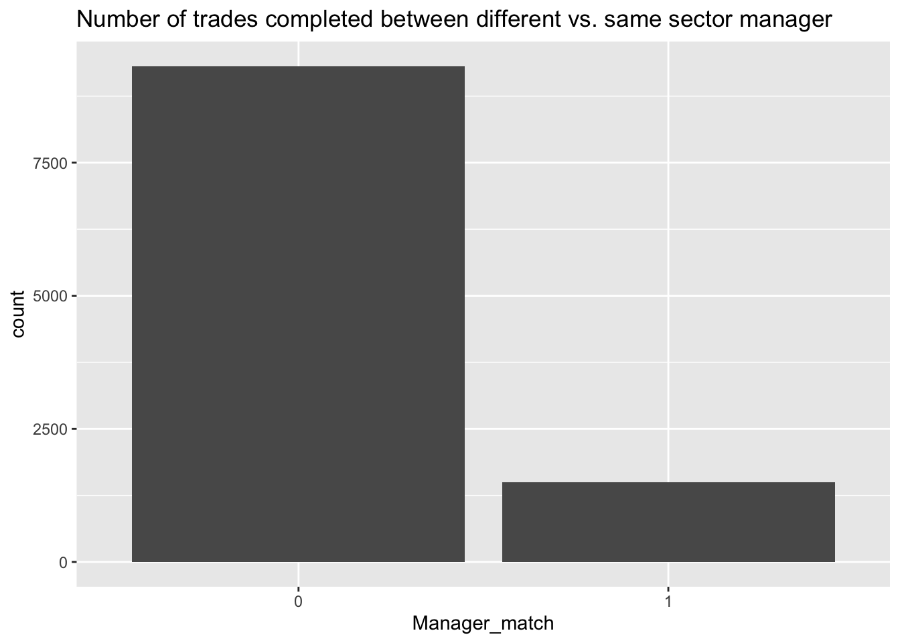
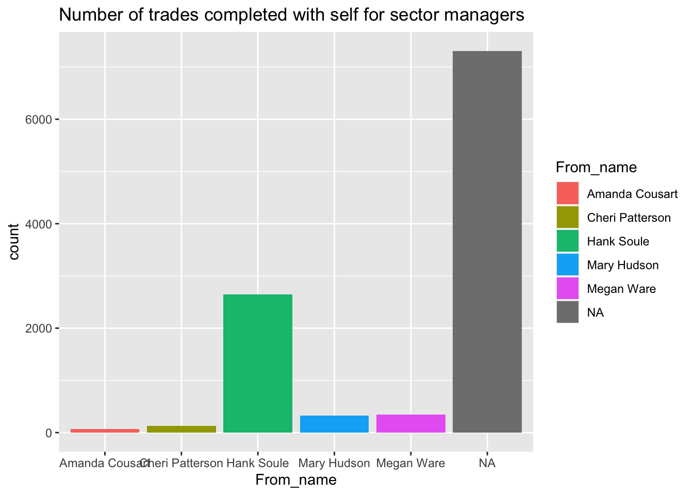
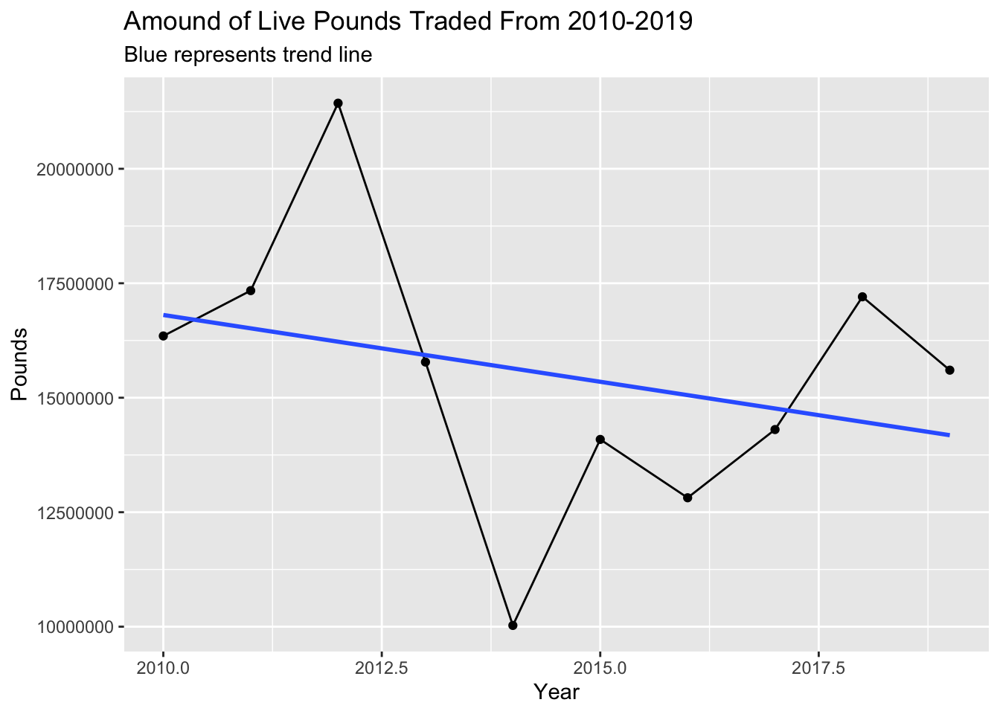
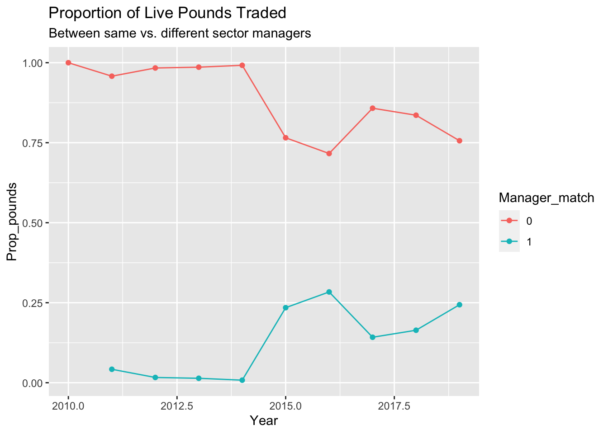
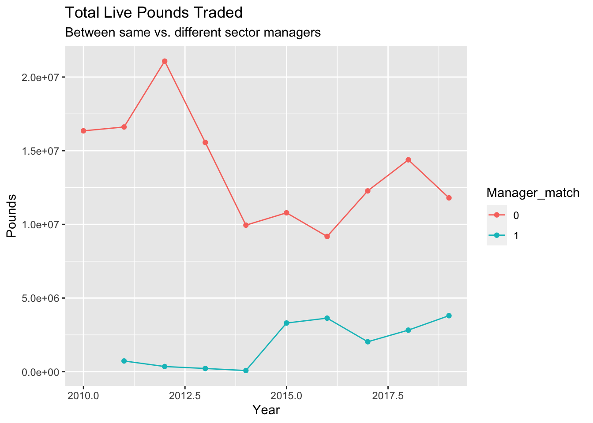
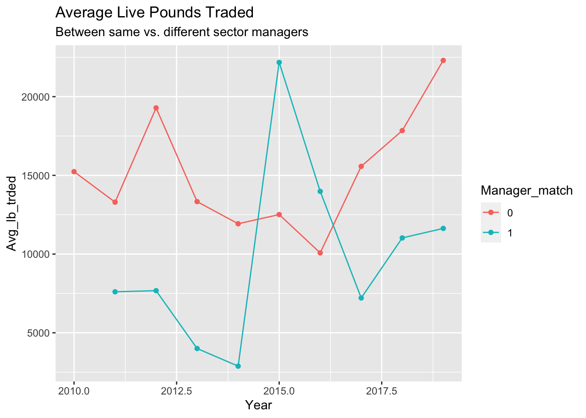

library(tidyverse)
library(haven)
library(modelsummary)
library(mhurdle)Exploratory Analysis
This document is here to do the initial exploratory analysis outlined at the end of “Final.html” in “Previous Work.”
Clean Data
Clean main [Lee and Demarest’s (2023) data]
#Datasets needed should already be in current directory and can be directly accessed with this
quarterly_fish_prices <- read_dta("quarterly_ols_coefs_from_R_2022_03_04.dta")
Tspatial_lags <- read_dta("Tspatial_lags_2022_03_04.dta")#Only select the variables of interest from each data set
#Select variables from quarterly fish prices
quarterly_fish_prices <- quarterly_fish_prices %>%
dplyr::select(fishing_year, q_fy, b, dateq, stockcode, stock_id, stock, nespp3, stockarea, spstock2, quota_remaining_BOQ, fraction_remaining_BOQ, proportion_observed, live_priceGDP)
#Select variables of interest from spatial lags
Tspatial_lags <- Tspatial_lags %>%
dplyr::select(fishing_year, dateq, stockcode, WTswt_quota_remaining_BOQ, WTDswt_quota_remaining_BOQ)#Background: there were a different number of observations between the two data sets. The following code corrects for the observations present in "quarterly_fish_prices" which were not present in Tspatial_lags
#Further select down for the variables that are shared between quarterly and Tspatial data sets
#Want to get this to the 672 observations of "Tspatial_lags"
quarterly_fish_prices <- quarterly_fish_prices %>%
#Helps get rid of some observations - Gets to 884 rows
dplyr::filter(stockcode != 1818 & stockcode != 9999) %>%
#Gets down to 680 rows
dplyr::filter(fishing_year >= 2010 & fishing_year <= 2019)replic <- dplyr::right_join(Tspatial_lags, quarterly_fish_prices, by = c("fishing_year", "dateq", "stockcode")) %>%
#This filters out the remaining non-overlapping parts of our dataset
dplyr::filter(!is.na(WTswt_quota_remaining_BOQ))#Add in factor variable quarter - Technically is already present, but in the sake of laziness so I can preserve code of regressions I will keep this bit in here. It affects final result in no way, simply makes my life a little easier transfering data from "Cragg.qmd" to here
replic <- replic %>%
#Rearrange 'replic' so that we have each stock in chronological order
dplyr::arrange(stockcode) %>%
#Add in a quarter variable
dplyr::mutate(quarter=rep(c("Q1","Q2","Q3","Q4"), times=168), .after = fishing_year) %>%
#Make the quarter variable a factor variable so regression recognizes it as a dummy variable
dplyr::mutate(quarter = as.factor(quarter))#Lee & D say on page 8 that any quota price that is either negative or NA was replaced with a 0 in their analysis. So, the following code does the same in my data set
replic <- replic %>%
#Stage 1 is to make any negative values into 0's
dplyr::mutate(b = case_when(b < 0 ~ 0,
b >=0 ~ b)) %>%
#Stage 2 is to make any NA's into 0's
dplyr::mutate(b = replace_na(b, 0))Clean ecodata
#Installing ecodata is different than other R packages - Below is the tools you'll need if you're installing it for the first time
library(devtools)
remotes::install_github("noaa-edab/ecodata", build_vignettes=TRUE)
#Then just load it like any other library
library(ecodata)#The above code chunk won't eval so just use this one to load in ecodata if it's already installed on your system
library(ecodata)#Below are the data sets of interest for this research
#For bottom sea temperature
#Data is only annually so need to fix
bottom_temp <- ecodata::bottom_temp
#Harmful algae blooms
#Data is only annually so need to fix
habs <- ecodata::habs
#Heatwave data
#Data is only annuall so need to fix
heatwave <- ecodata::heatwave
#Sea surface temerpature anomoly - not as great as bottom temp anomoly but still good
sst <- ecodata::seasonal_oisst_anom
#Storminess
#Data is only annually so need to fix
storms <- ecodata::storminessPrevious notes from this point:
For bottom_temp: Also, the GOM and GB (George’s Bank) observations are different. Thus, when merging with the replic data set, we will have to account for that difference. Shouldn’t be too hard though - could always use a mutate(EPU=case_when()) and merge on the EPU.
For heatwave: Tracks both the intensity and duration of both the Sea-Surface-Temp (SST) and Bottom_Surface_Temp (BST). The variables duration-BottomDetrended and duration-SurfaceDetrended should describe the duration of heatwaves in a year. Are they summed for the year though?
The de-trended in the variable names corresponds to the authors taking away the trend of global warming from the data. Meaning any deviation from 0 in the data corresponds with extra heating or cooling that can be attributed to region specific climate change. For more information refer to the link at the bottom of the help page for the heatwave data set.
For sst: The link to the documentation can be seen here. Describes the exact coding of “spring”, “summer”, “fall”, and “winter”. And, I recode into quarters to make my life easier since they have exact overlap.
#This cell reformats the ecodata data sets into more usable formats
#Widen the bottom_temp data set and resrtic for only observations we care about
bottom_temp <- bottom_temp %>%
#Restrict to only the time frame in question
filter(Time >= 2010 & Time <= 2019) %>%
#Exclude MAB and SS
filter(EPU != "MAB" & EPU != "SS") %>%
#Pivot the table wider - take observations from the same year and make them into columns instead of redundant rows to make mergering easier later
pivot_wider(names_from = Var, values_from = Value)
habs <- habs %>%
#Restrict area to only GOM in aggregate
filter(Var == "Gulf_of_Maine_All") %>%
#Only include years we care about
filter(Time >= 2010 & Time <= 2019) %>%
#Rename the Value to the variable it's observing
rename(Algae = Value) %>%
#Select only the columns needed for merging
dplyr::select(!c(Source, Var))
heatwave <- heatwave %>%
#Restict area to George's Bank (GB) and Gulf of Maine (GOM)
filter(EPU == "GB" | EPU == "GOM") %>%
#Restrict time frame to 2010-2019
filter(Time >= 2010 & Time <= 2019) %>%
#Keep maximum intensity and duration of SS and BS heatwaves
filter(Var != "cumulative intensity-SurfaceDetrended" & Var != "cumulative intensity-BottomDetrended") %>%
#Pivot this wider so that we only have 1 row for each observation in both GB and GOM
#Deselect Units because it fucks with the pivot wider function
dplyr::select(!Units) %>%
pivot_wider(names_from = Var, values_from = Value)
#SST is an anomoly measure, similar to the heatwave data set - Seems redundant due to the heatwave dataset. Heatwave seems much more complete and has more robust methods
sst <- sst %>%
#Select years 2010-2019
filter(Time >= 2010 & Time <= 2019) %>%
#Recode the time series in terms of quarters instead of seasons to make merge easier later
mutate(q = case_when(Var == "Winter" ~ "Q1",
Var == "Spring" ~ "Q2",
Var == "Summer" ~ "Q3",
Var == "Fall" ~ "Q4"),
.after = Var) %>%
#Drop the Var colum since it's unnecessary
dplyr::select(!Var) %>%
#Filter for only area of interest
filter(EPU != "MAB")
#Probably need to come back and make this wider, but this works for now
storms <- storms %>%
#Select only years we care about
filter(Year >= 2010 & Year <= 2019) %>%
#Consider only areas of interest
filter(EPU == "GOM" | EPU == "GB") %>%
#Group by the year and general region to get a better sense of cumulative storms for this region
group_by(Year, Var) %>%
summarize(mean_events = mean(Value),
untis = units,
EPU = EPU) %>%
#This data represents days in the year that a "storm" was recorded from a wind and wave perspective
#Make the data set tidy where each observation (year) is a row
pivot_wider(names_from = Var, values_from = mean_events) %>%
#Take the average of the GOM observations and just use the GB for their respective rows
mutate(Gale_Wind = case_when(EPU == "GOM" ~ mean(c(`Eastern Gulf of Maine_GaleWind`, `Western Gulf of Maine_GaleWind`), na.rm = T),
EPU == "GB" ~ `Georges Bank_GaleWind`), .after = EPU) %>%
#Same process as above mutate but for WaveHeight instead
mutate(Wave_Height = case_when(EPU == "GOM" ~ mean(c(`Eastern Gulf of Maine_WaveHeight`, `Western Gulf of Maine_WaveHeight`), na.rm = T),
EPU == "GB" ~ `Georges Bank_WaveHeight`), .after = Gale_Wind) %>%
#Select only the columnds that matter for merging
dplyr::select(Year, EPU, Gale_Wind, Wave_Height) %>%
#Rename the Year column to Time to make merge easier
rename(Time = Year)#Rewrite the EPU's of replic to be less specified so we can merge data sets
replic <- replic %>%
mutate(EPU = case_when(stockarea == "CCGOM" ~ "GOM",
stockarea == "GBE" ~ "GB",
stockarea == "GBW" ~ "GB",
stockarea == "GB" ~ "GB",
stockarea == "GOM" ~ "GOM",
#Maddy says that Plaice is normally caught in GB
stockarea == "Unit" ~ "GB",
#SNEMA is closer to GOM than GB so we count it as such
stockarea == "SNEMA" ~ "GOM"), .after = stockcode)#Join the heat related data sets together (heatwave and bottom_temp)
temp1 <- bottom_temp %>%
#Join the heatwave and bottom temp data sets together
right_join(heatwave, by = join_by(Time, EPU)) %>%
#Select the columns that will be most helpful
dplyr::select(Time, EPU, `bottom temp anomaly in situ`, `sst anomaly in situ`, `duration-SurfaceDetrended`, `duration-BottomDetrended`) %>%
#Join again with storms data
right_join(storms, by = join_by(Time, EPU)) %>%
#Join again with algae bloom data - Don't have data on GB so might need to come back and alter that for regression
left_join(habs, by = join_by(Time, EPU)) %>%
#Repeat each thing for 4 quarters
slice(rep(1:n(), each = 4)) %>%
mutate(q = rep(c("Q1","Q2","Q3","Q4"), times=20), .after = Time) %>%
#Rename q to quarter and turn into factor
rename(quarter = q) %>%
mutate(quarter = as.factor(quarter))#This chunk appears to join everything together correctly
#Create the merged price and climate data set called "replic2"
replic2 <- replic %>%
right_join(temp1, join_by("fishing_year"=="Time", EPU, quarter))Notes from this section:
There were two suggestions from Kanae about how to better improve the model. The first was to consider when we saw comparatively extreme Sea Surface Temperatures (SST’s) and Bottom Surface Temperatures (BST’s). The most obvious way of doing this was to create a dummy variable in R with a cut-off. We arbitrarily settled on the 90th percentile for this but it could easily have been any other number. In the future, consider using log-standard deviations since we see the quota prices are approaching a normal shape when taking a log scale. The goal of adding the 90th percentile of SST and BST anomaly was to see if extreme heatwaves are reflected in quota prices. We would expect to see that they are since the would drive stocks either deeper or farther north. In either case it would be away from where the fishermen were/are fishing. The second suggestion was to consider whether a stock had been retroactively had its stock assessment changed. This is slightly complicated to explain since it requires summarizing this paper (authored by some GMRI staff) but basically the amount of fish that can be taken from the ocean collectively, known as the Total Allowable Catch (TAC), is determined before the fishing year by suggestions from biologists. In reality it’s much more complicated but for our sake that’s all we need to know. So, biologists attempt to estimate the spawning stock biomass (SSB) to make an informed decision about the populations ability to reproduce and thus determine how much of it can be taken out. However, (more than) a couple of years we have seen some estimates of the SSB for different stocks so bad that researchers have had to go back and recalculate how many there must have been given where they see the population now. In this table from the Kerr et al. (2022) we have documentation of which stocks had to have their populations reevaluated because of over-fishing. Thus, I used this table to add a dummy variable to my data set on whether the stock required an adjustment that year. The goal of the sock adjustment variable was to test whether modeling errors were affect the market of quota prices.
#Add in the 90th percentile dummy variable for SST and BST
replic2 <- replic2 %>%
#Create the ifelse command to test if the observation makes the 90th percentile cutoff
mutate(SST90 = ifelse(`sst anomaly in situ` >= quantile(replic2$`sst anomaly in situ`, probs = .9), 1, 0),.after = `sst anomaly in situ`) %>%
#Repeat but for BST
mutate(BST90 = ifelse(`bottom temp anomaly in situ` >= quantile(replic2$`bottom temp anomaly in situ`, probs = .9), 1, 0),.after = `bottom temp anomaly in situ`)#Add in dummy variable for SSB getting revised after-the-fact because previous estimations were realized to be incorrect
#Dummy "stock_adjustment": 0 = no adjustment for stock in given year, 1 = adjustment made to stock in given year
replic3 <- replic2 %>%
mutate(stock_adjustment = case_when(
#George's Bank Cod
stock_id == "CODGBE" & fishing_year == 2012 ~ 1,
stock_id == "CODGBW" & fishing_year == 2012 ~ 1,
stock_id == "CODGBE" & fishing_year == 2013 ~ 1,
stock_id == "CODGBW" & fishing_year == 2013 ~ 1,
#Gulf of Maine Cod
stock_id == "CODGMSS" & fishing_year == 2019 ~ 1,
#George's Bank Haddock
stock_id == "HADGBE" & fishing_year == 2015 ~ 1,
stock_id == "HADGBW" & fishing_year == 2015 ~ 1,
stock_id == "HADGBE" & fishing_year == 2017 ~ 1,
stock_id == "HADGBW" & fishing_year == 2017 ~ 1,
stock_id == "HADGBE" & fishing_year == 2019 ~ 1,
stock_id == "HADGBW" & fishing_year == 2019 ~ 1,
#Gulf of Maine Haddock
stock_id == "HADGM" & fishing_year == 2019 ~ 1,
#George's Bank Yellowtail Flounder
stock_id == "YELGB" & fishing_year == 2011 ~ 1,
stock_id == "YELGB" & fishing_year == 2012 ~ 1,
stock_id == "YELGB" & fishing_year == 2013 ~ 1,
#Cape Cod and Gulf of Maine Yellowtail Flounder
stock_id == "YELCCGM" & fishing_year == 2012 ~ 1,
stock_id == "YELCCGM" & fishing_year == 2015 ~ 1,
stock_id == "YELCCGM" & fishing_year == 2017 ~ 1,
stock_id == "YELCCGM" & fishing_year == 2019 ~ 1,
#George's Bank Winter Flounder
stock_id == "FLWGB" & fishing_year == 2015 ~ 1,
stock_id == "FLWGB" & fishing_year == 2017 ~ 1,
stock_id == "FLWGB" & fishing_year == 2019 ~ 1,
stock_id == "FLWGB" & fishing_year == 2020 ~ 1,
#Witch Flounder
stock_id == "WITGMMA" & fishing_year == 2015 ~ 1,
#American Plaice
stock_id == "PLAGMMA" & fishing_year == 2008 ~ 1,
stock_id == "PLAGMMA" & fishing_year == 2012 ~ 1,
stock_id == "PLAGMMA" & fishing_year == 2015 ~ 1,
stock_id == "PLAGMMA" & fishing_year == 2017 ~ 1,
stock_id == "PLAGMMA" & fishing_year == 2019 ~ 1,
#Pollock
stock_id == "POKGMASS" & fishing_year == 2015 ~ 1,
stock_id == "POKGMASS" & fishing_year == 2017 ~ 1,
stock_id == "POKGMASS" & fishing_year == 2019 ~ 1,
#White Hake
stock_id == "HKWGMMA" & fishing_year == 2017 ~ 1,
stock_id == "HKWGMMA" & fishing_year == 2019 ~ 1,
#Set the default value of the column to 0 for all the stocks which didn't get SSB revised
.default = 0
), .after = EPU)Previous Model - No Climate Change
#Create the linear and expoential models
#This hurdle model is the linear one, which comes from the 'dist="n"' arguement
hurdle.1a <- mhurdle(b ~ quota_remaining_BOQ + fraction_remaining_BOQ + proportion_observed + quarter | live_priceGDP + quota_remaining_BOQ + proportion_observed + WTswt_quota_remaining_BOQ + WTDswt_quota_remaining_BOQ + quarter,
data = replic,
h2 = TRUE, dist = "n", method = "bhhh")
#This hurdle model is the expoential one, which comes from the 'dist="ln"' arguement
hurdle.1b <- update(hurdle.1a, dist = "ln")#Display the hurdle models
modelsummary(models = list("Exponential" = hurdle.1b, "Linear" = hurdle.1a),
#Set the stars to signify statistical significance level
stars = c('^' = 0.1, '*' = .05, '**' = .01, '***' = 0.001),
#Make the standard errors go away
statistic = NULL,
#Rename the coefficients to make the table presentable
coef_map = c(
"h1.quota_remaining_BOQ" = "Quota Remaining [H1]",
"h1.fraction_remaining_BOQ" = "Fraction Quota Remaining [H1]",
"h1.proportion_observed" = "Fraction of Catch Observed [H1]",
"h1.quarterQ2" = "Q2 [H1]",
"h1.quarterQ3" = "Q3 [H1]",
"h1.quarterQ4" = "Q4 [H1]",
"h1.(Intercept)" = "Intercept [H1]",
"h2.live_priceGDP" = "Live Price [H2]",
"h2.quota_remaining_BOQ" = "Quota Remaining [H2]",
"h2.fraction_remaining_BOQ" = "Fraction Quota Remaining [H2]",
"h2.proportion_observed" = "Fraction of Catch Observed [H2]",
"h2.WTswt_quota_remaining_BOQ" = "Distance Lag of Quota Remaining [H2]",
"h2.WTDswt_quota_remaining_BOQ" = "Inverse Distance Lag of Quota Remaining [H2]",
"h2.quarterQ2" = "Q2 [H2]",
"h2.quarterQ3" = "Q3 [H2]",
"h2.quarterQ4" = "Q4 [H2]",
"h2.(Intercept)" = "Intercept [H2]"),
coef_omit = "sd.sd|pos",
gof_omit = "dpar",
gof_map = list(
list("raw" = "nobs", "clean" = "N", "fmt" = 0),
list("raw" = "nobs.zero", "clean" = "N [0]", "fmt" = 0),
list("raw" = "nobs.pos", "clean" = "N [Count]", "fmt" = 0),
#This funky "²" can be accessed through the emoji keyboard on mac with
#"control+command+space" and searching for super-script
list("raw" = "R2.zero", "clean" = "R² [0]", "fmt" = 3),
list("raw" = "R2.pos", "clean" = "R² [Count]", "fmt" = 3),
list("raw" = "logLik", "clean" = "Log Likelihood", "fmt" = 3)
))| Exponential | Linear | |
|---|---|---|
| Quota Remaining [H1] | −0.042 | 0.030 |
| Fraction Quota Remaining [H1] | −3.530*** | −11.334** |
| Fraction of Catch Observed [H1] | 0.625 | −4.252^ |
| Q2 [H1] | −0.701*** | −1.364* |
| Q3 [H1] | −0.888*** | −0.641 |
| Q4 [H1] | −1.916*** | −4.039*** |
| Intercept [H1] | 4.050*** | 13.656** |
| Live Price [H2] | 0.604*** | 0.996*** |
| Quota Remaining [H2] | −0.139*** | −0.223*** |
| Fraction of Catch Observed [H2] | 2.341*** | 7.028*** |
| Distance Lag of Quota Remaining [H2] | 0.266** | 1.112*** |
| Inverse Distance Lag of Quota Remaining [H2] | −0.332** | −1.156*** |
| Q2 [H2] | −0.114 | −0.453^ |
| Q3 [H2] | −0.258** | −0.569* |
| Q4 [H2] | −0.228* | −0.665* |
| Intercept [H2] | −0.754* | −2.017*** |
| N | 672 | 672 |
| N [0] | 305 | 305 |
| N [Count] | 367 | 367 |
| R² [0] | 0.342 | 0.341 |
| R² [Count] | 0.518 | 0.172 |
| Log Likelihood | −824.798 | −898.223 |
| ^ p < 0.1, * p < 0.05, ** p < 0.01, *** p < 0.001 |
#Also important is the OLS regression
OLS_replic <- lm(data = replic, b ~ live_priceGDP + quota_remaining_BOQ + proportion_observed + WTswt_quota_remaining_BOQ + WTDswt_quota_remaining_BOQ + quarter)#Display the OLS replication
modelsummary(models = list("OLS" = OLS_replic),
#Set the stars to signify statistical significance level
stars = c('^' = 0.1, '*' = .05, '**' = .01, '***' = 0.001),
#Remove the standard errors
statistic = NULL,
#Rename the coefficients to make the table presentable
coef_rename = c("(Intercept)" = "Intercept",
"live_priceGDP" = "Live Price",
"quota_remaining_BOQ" = "Quota Remaining",
"proportion_observed" = "Fraction of Catch Observed",
"WTswt_quota_remaining_BOQ" = "Distance Lag of Quota Remaining",
"WTDswt_quota_remaining_BOQ" = "Inverse Distance Lag of Quota Remaining",
"quarterQ2" = "Q2",
"quarterQ3" = "Q3",
"quarterQ4" = "Q4"),
gof_map = list(
list("raw" = "nobs", "clean" = "N", "fmt" = 0),
#This funky "²" can be accessed through the emoji keyboard on mac with
#"control+command+space" and searching for super-script
list("raw" = "r.squared", "clean" = "R²", "fmt" = 3),
list("raw" = "adj.r.squared", "clean" = "Adj. R²", "fmt" = 3),
list("raw" = "aic", "clean" = "AIC", "fmt" = 3),
list("raw" = "bic", "clean" = "BIC ", "fmt" = 3),
list("raw" = "logLik", "clean" = "Log Likelihood", "fmt" = 3)
))| OLS | |
|---|---|
| Intercept | −0.478*** |
| Live Price | 0.393*** |
| Quota Remaining | −0.005 |
| Fraction of Catch Observed | 1.132*** |
| Distance Lag of Quota Remaining | 0.340*** |
| Inverse Distance Lag of Quota Remaining | −0.351*** |
| Q2 | −0.084 |
| Q3 | −0.074 |
| Q4 | −0.120^ |
| N | 672 |
| R² | 0.236 |
| Adj. R² | 0.227 |
| AIC | 1140.175 |
| BIC | 1185.278 |
| Log Likelihood | −560.088 |
| ^ p < 0.1, * p < 0.05, ** p < 0.01, *** p < 0.001 |
One interesting control to consider that Lee and Demarest (2023) left out is a time series control. They kind of controlled for this with by including the quarters but including the year should also capture market trends and expectations which are endogenous(?) to the model.
#Simply add fishing year into the equation eith the same exact code as above
hurdle.1aa <- mhurdle(b ~ quota_remaining_BOQ + fraction_remaining_BOQ + proportion_observed + quarter | live_priceGDP + quota_remaining_BOQ + proportion_observed + WTswt_quota_remaining_BOQ + WTDswt_quota_remaining_BOQ + quarter + fishing_year,
data = replic,
h2 = TRUE, dist = "n", method = "bhhh")
hurdle.1ab <- update(hurdle.1aa, dist = "ln")#Display the replicated Linear and Expoential models but with a time series control
modelsummary(models = list("Linear Robust Time Series" = hurdle.1aa, "Exponential Robust Time Series" = hurdle.1ab),
#Set the stars to signify statistical significance level
stars = c('^' = 0.1, '*' = .05, '**' = .01, '***' = 0.001),
#Remove the standard errors
statistic = NULL,
#Rename the coefficients to make the table presentable
coef_rename = c("h1.(Intercept)" = "Intercept [H1]",
"h1.quota_remaining_BOQ" = "Quota Remaining [H1]",
"h1.fraction_remaining_BOQ" = "Fraction Quota Remaining [H1]",
"h1.proportion_observed" = "Fraction of Catch Observed [H1]",
"h1.quarterQ2" = "Q2 [H1]",
"h1.quarterQ3" = "Q3 [H1]",
"h1.quarterQ4" = "Q4 [H1]",
"h2.(Intercept)" = "Intercept [H2]",
"h2.live_priceGDP" = "Live Price",
"h2.quota_remaining_BOQ" = "Quota Remaining [H2]",
"h2.fraction_remaining_BOQ" = "Fraction Quota Remaining [H2]",
"h2.proportion_observed" = "Fraction of Catch Observed [H2]",
"h2.WTswt_quota_remaining_BOQ" = "Distance Lag of Quota Remaining",
"h2.WTDswt_quota_remaining_BOQ" = "Inverse Distance Lag of Quota Remaining",
"h2.quarterQ2" = "Q2 [H2]",
"h2.quarterQ3" = "Q3 [H2]",
"h2.quarterQ4" = "Q4 [H2]",
"h2.fishing_year" = "Year"),
coef_omit = "sd.sd|pos",
gof_omit = "dpar",
gof_map = list(
list("raw" = "nobs", "clean" = "N", "fmt" = 0),
list("raw" = "nobs.zero", "clean" = "N [0]", "fmt" = 0),
list("raw" = "nobs.pos", "clean" = "N [Count]", "fmt" = 0),
#This funky "²" can be accessed through the emoji keyboard on mac with
#"control+command+space" and searching for super-script
list("raw" = "R2.zero", "clean" = "R² [0]", "fmt" = 3),
list("raw" = "R2.pos", "clean" = "R² [Count]", "fmt" = 3),
list("raw" = "logLik", "clean" = "Log Likelihood", "fmt" = 3)
))| Linear Robust Time Series | Exponential Robust Time Series | |
|---|---|---|
| Intercept [H1] | 13.810** | 4.030*** |
| Quota Remaining [H1] | 0.022 | −0.042 |
| Fraction Quota Remaining [H1] | −11.381** | −3.521*** |
| Fraction of Catch Observed [H1] | −4.067^ | 0.650 |
| Q2 [H1] | −1.469* | −0.697*** |
| Q3 [H1] | −0.892 | −0.882*** |
| Q4 [H1] | −4.224*** | −1.908*** |
| Intercept [H2] | −149.556 | 40.173 |
| Live Price | 0.994*** | 0.611*** |
| Quota Remaining [H2] | −0.224*** | −0.142*** |
| Fraction of Catch Observed [H2] | 7.422*** | 2.214*** |
| Distance Lag of Quota Remaining | 1.066*** | 0.283** |
| Inverse Distance Lag of Quota Remaining | −1.233*** | −0.314** |
| Q2 [H2] | −0.442 | −0.108 |
| Q3 [H2] | −0.565* | −0.253** |
| Q4 [H2] | −0.689* | −0.215^ |
| Year | 0.073 | −0.020 |
| N | 672 | 672 |
| N [0] | 305 | 305 |
| N [Count] | 367 | 367 |
| R² [0] | 0.342 | 0.342 |
| R² [Count] | 0.175 | 0.520 |
| Log Likelihood | −897.189 | −824.345 |
| ^ p < 0.1, * p < 0.05, ** p < 0.01, *** p < 0.001 |
Including the year does not seem to make a large difference in the hurdle model’s fit. This can quickly be determined by the almost identical log likelihood values between the time series and non-time series models. In addition, the \(R^2\) values of both the count and 0 models are also nearly identical between the time series and non-time series models. The only significant difference is between the linear and exponential models themselves, since the exponential fits the count data much better than the linear one does which predicting the 0’s virtually just as well.
#Simply add fishing year into the OLS regression. It could have a difference here
OLS_replic_time_series <- lm(data = replic, b ~ live_priceGDP + quota_remaining_BOQ + proportion_observed + WTswt_quota_remaining_BOQ + WTDswt_quota_remaining_BOQ + quarter + fishing_year)#Display the time series replication of the OLS regression
modelsummary(models = list("OLS" = OLS_replic_time_series),
#Set the stars to signify statistical significance level
stars = c('^' = 0.1, '*' = .05, '**' = .01, '***' = 0.001),
#Remove standard errors
statistic = NULL,
#Rename the coefficients to make the table presentable
coef_rename = c("(Intercept)" = "Intercept",
"live_priceGDP" = "Live Price",
"quota_remaining_BOQ" = "Quota Remaining",
"proportion_observed" = "Fraction of Catch Observed",
"WTswt_quota_remaining_BOQ" = "Distance Lag of Quota Remaining",
"WTDswt_quota_remaining_BOQ" = "Inverse Distance Lag of Quota Remaining",
"quarterQ2" = "Q2",
"quarterQ3" = "Q3",
"quarterQ4" = "Q4",
"fishing_year" = "Year"),
gof_map = list(
list("raw" = "nobs", "clean" = "N", "fmt" = 0),
#This funky "²" can be accessed through the emoji keyboard on mac with
#"control+command+space" and searching for super-script
list("raw" = "r.squared", "clean" = "R²", "fmt" = 3),
list("raw" = "adj.r.squared", "clean" = "Adj. R²", "fmt" = 3),
list("raw" = "aic", "clean" = "AIC", "fmt" = 3),
list("raw" = "bic", "clean" = "BIC ", "fmt" = 3),
list("raw" = "logLik", "clean" = "Log Likelihood", "fmt" = 3)
))| OLS | |
|---|---|
| Intercept | −56.858* |
| Live Price | 0.394*** |
| Quota Remaining | −0.008* |
| Fraction of Catch Observed | 1.338*** |
| Distance Lag of Quota Remaining | 0.333*** |
| Inverse Distance Lag of Quota Remaining | −0.394*** |
| Q2 | −0.102 |
| Q3 | −0.107^ |
| Q4 | −0.167* |
| Year | 0.028* |
| N | 672 |
| R² | 0.243 |
| Adj. R² | 0.233 |
| AIC | 1136.051 |
| BIC | 1185.664 |
| Log Likelihood | −557.025 |
| ^ p < 0.1, * p < 0.05, ** p < 0.01, *** p < 0.001 |
We can of course, also make these replication models even more complicated. We can consider whether the error terms of both parts of the hurdle are correlated and set something called the finalHessian to TRUE in mhurdle’s arguments. I do not understand the hessian currently because of my lack of linear algebra. Below is an example of considering if the errors of the two parts of the model are correlated.
hurdle.2a <- mhurdle(b ~ quota_remaining_BOQ + fraction_remaining_BOQ + proportion_observed + quarter | live_priceGDP + quota_remaining_BOQ + proportion_observed + WTswt_quota_remaining_BOQ + WTDswt_quota_remaining_BOQ + quarter, data = replic,
h2 = FALSE, dist = "ln", corr = TRUE, method = "bhhh", finalHessian = TRUE)
hurdle.2b <- update(hurdle.2a, start = coef(hurdle.2a), robust = FALSE)modelsummary(models = list("Exponential Robust" = hurdle.2a, "Exponential Non-Robust" = hurdle.2b),
#Set the stars to signify statistical significance level
stars = c('^' = 0.1, '*' = .05, '**' = .01, '***' = 0.001),
#Remove standard errors
statistic = NULL,
#Rename the coefficients to make the table presentable
coef_rename = c("h1.(Intercept)" = "Intercept [H1]",
"h1.quota_remaining_BOQ" = "Quota Remaining [H1]",
"h1.fraction_remaining_BOQ" = "Fraction Quota Remaining [H1]",
"h1.proportion_observed" = "Fraction of Catch Observed [H1]",
"h1.quarterQ2" = "Q2 [H1]",
"h1.quarterQ3" = "Q3 [H1]",
"h1.quarterQ4" = "Q4 [H1]",
"h2.(Intercept)" = "Intercept [H2]",
"h2.live_priceGDP" = "Live Price",
"h2.quota_remaining_BOQ" = "Quota Remaining [H2]",
"h2.fraction_remaining_BOQ" = "Fraction Quota Remaining [H2]",
"h2.proportion_observed" = "Fraction of Catch Observed [H2]",
"h2.WTswt_quota_remaining_BOQ" = "Distance Lag of Quota Remaining",
"h2.WTDswt_quota_remaining_BOQ" = "Inverse Distance Lag of Quota Remaining",
"h2.quarterQ2" = "Q2 [H2]",
"h2.quarterQ3" = "Q3 [H2]",
"h2.quarterQ4" = "Q4 [H2]",
"corr12" = "Correlation of Errors [H1 & H2]"),
coef_omit = "sd.sd|pos",
gof_omit = "dpar",
gof_map = list(
list("raw" = "nobs", "clean" = "N", "fmt" = 0),
list("raw" = "nobs.zero", "clean" = "N [0]", "fmt" = 0),
list("raw" = "nobs.pos", "clean" = "N [Count]", "fmt" = 0),
#This funky "²" can be accessed through the emoji keyboard on mac with
#"control+command+space" and searching for super-script
list("raw" = "R2.zero", "clean" = "R² [0]", "fmt" = 3),
list("raw" = "R2.pos", "clean" = "R² [Count]", "fmt" = 3),
list("raw" = "logLik", "clean" = "Log Likelihood", "fmt" = 3)
))| Exponential Robust | Exponential Non-Robust | |
|---|---|---|
| Intercept [H1] | 4.031*** | 4.031*** |
| Quota Remaining [H1] | −0.122*** | −0.122*** |
| Fraction Quota Remaining [H1] | −3.580*** | −3.580*** |
| Fraction of Catch Observed [H1] | 1.143^ | 1.143^ |
| Q2 [H1] | −0.723*** | −0.723*** |
| Q3 [H1] | −0.963*** | −0.963*** |
| Q4 [H1] | −1.945*** | −1.945*** |
| Intercept [H2] | −1.348*** | −1.348*** |
| Live Price | 0.885*** | 0.885*** |
| Quota Remaining [H2] | −0.203*** | −0.203*** |
| Fraction of Catch Observed [H2] | 3.028*** | 3.027*** |
| Distance Lag of Quota Remaining | 0.178 | 0.178 |
| Inverse Distance Lag of Quota Remaining | −0.275 | −0.275 |
| Q2 [H2] | −0.069 | −0.069 |
| Q3 [H2] | −0.402** | −0.402** |
| Q4 [H2] | −0.355* | −0.355* |
| Correlation of Errors [H1 & H2] | −0.258 | −0.258 |
| N | 672 | 672 |
| N [0] | 305 | 305 |
| N [Count] | 367 | 367 |
| R² [0] | 0.343 | 0.343 |
| R² [Count] | 0.437 | 0.437 |
| Log Likelihood | −852.905 | −852.905 |
| ^ p < 0.1, * p < 0.05, ** p < 0.01, *** p < 0.001 |
Both models considered use an exponential distribution of the errors since we’ve seen this be a better fit for the count data. Their difference is in whether they use robust (heteroskedastic) or non-robust (homeoskedastic) assumptions about the errors while considering if the errors are correlated. However, as one can easily see the models are not only (almost) identical, but also have the same significance on their Correlation of Errors term. Meaning twofold: robust and non-robust assumption doesn’t matter for this case and there is not significant evidence to suggest that the error terms of the models are correlated. Which I believe means that we can interpret this as model exogeneity.
Previous Model - Climate Change
To begin, we should keep the same structure of models as the above section to see how including climate change has impacted the model. However, in the above section we have considered several different ways to look at the hurdle model such as robustness, correlation, etc. Therefore, we should also look at those models for this comparison’s sake. Especially considering that we will see the above models become fairly non-robust when we start adding climate data.
#Create the models which include climate change variables
#Call the "churdles" for "climate hurdle"
#This model is exponential non-correlated robust hurdle model
churdle.4a <- mhurdle(b ~ quota_remaining_BOQ + fraction_remaining_BOQ + proportion_observed + quarter + `bottom temp anomaly in situ` + `sst anomaly in situ` + `duration-BottomDetrended` + `duration-SurfaceDetrended` + Wave_Height + BST90 + stock_adjustment | live_priceGDP + quota_remaining_BOQ + proportion_observed + WTswt_quota_remaining_BOQ + WTDswt_quota_remaining_BOQ + quarter + `bottom temp anomaly in situ` + `sst anomaly in situ` + `duration-BottomDetrended` + Wave_Height + BST90 + stock_adjustment,
data = replic3,
h2 = TRUE, dist = "ln", method = "bhhh")
#This model creates a exponential correlated robust hurdle model
churdle.5a <- mhurdle(b ~ quota_remaining_BOQ + fraction_remaining_BOQ + proportion_observed + quarter + `bottom temp anomaly in situ` + `sst anomaly in situ` + `duration-BottomDetrended` + `duration-SurfaceDetrended` + Wave_Height + BST90 + stock_adjustment | live_priceGDP + quota_remaining_BOQ + proportion_observed + WTswt_quota_remaining_BOQ + WTDswt_quota_remaining_BOQ + quarter + `bottom temp anomaly in situ` + `sst anomaly in situ` + `duration-BottomDetrended` + Wave_Height + BST90 + stock_adjustment, data = replic3,
h2 = FALSE, dist = "ln", corr = TRUE, method = "bhhh", finalHessian = TRUE)
#This model updates churdle.5a to be non-robust
churdle.5b <- update(churdle.5a, start = coef(churdle.5a), robust = FALSE)
#This model updats churdle.5a to be linear
churdle.5c <- update(churdle.5a, dist = "n")#This summarizes the models created in the previous cell
modelsummary(models = list("Linear Robust Correlated Climate" = churdle.5c, "Exponential Robust Correlated Climate" = churdle.5a, "Exponential Non-Robust Correlated Climate" = churdle.5b, "Exponential Robust Non-Correlated Climate" = churdle.4a),
#Set the stars to correct significance level
stars = c('^' = 0.1, '*' = .05, '**' = .01, '***' = 0.001),
#Prevents standard error from being displayed since I think there's too much going on with it
statistic = NULL,
coef_rename = c("h1.(Intercept)" = "Intercept [H1]",
"h1.quota_remaining_BOQ" = "Quota Remaining [H1]",
"h1.fraction_remaining_BOQ" = "Fraction Quota Remaining [H1]",
"h1.proportion_observed" = "Fraction of Catch Observed [H1]",
"h1.quarterQ2" = "Q2 [H1]",
"h1.quarterQ3" = "Q3 [H1]",
"h1.quarterQ4" = "Q4 [H1]",
"h1.`bottom temp anomaly in situ`" = "BST Heatwave Maximum [H1]",
"h1.`sst anomaly in situ`" = "SST Heatwave Maximum [H1]",
"h1.`duration-BottomDetrended`" = "BST Heatwave Duration [H1]",
"h1.`duration-SurfaceDetrended`" = "SST Heatwave Duration [H1]",
"h1.Wave_Height" = "Storm Days (Waves) [H1]",
"h1.BST90" = "BST in 90th Percentile [H1]",
"h1.stock_adjustment" = "Stock Assessment Adjusted Post-Facto [H1]",
"h2.(Intercept)" = "Intercept [H2]",
"h2.live_priceGDP" = "Live Price [H2]",
"h2.quota_remaining_BOQ" = "Quota Remaining [H2]",
"h2.fraction_remaining_BOQ" = "Fraction Quota Remaining [H2]",
"h2.proportion_observed" = "Fraction of Catch Observed [H2]",
"h2.WTswt_quota_remaining_BOQ" = "Distance Lag of Quota Remaining [H2]",
"h2.WTDswt_quota_remaining_BOQ" = "Inverse Distance Lag of Quota Remaining [H2]",
"h2.quarterQ2" = "Q2 [H2]",
"h2.quarterQ3" = "Q3 [H2]",
"h2.quarterQ4" = "Q4 [H2]",
"h2.`bottom temp anomaly in situ`" = "BST Heatwave Maximum [H2]",
"h2.`sst anomaly in situ`" = "SST Heatwave Maximum [H2]",
"h2.`duration-BottomDetrended`" = "BST Heatwave Duration [H2]",
"h2.Wave_Height" = "Storm Days (Waves) [H2]",
"h2.BST90" = "BST in 90th Percentile [H2]",
"h2.stock_adjustment" = "Stock Assessment Adjusted Post-Facto [H2]",
"corr12" = "Correlation of Errors [H1 & H2]"),
coef_omit = "sd.sd|pos",
#gof_omit = "dpar",
gof_map = list(
list("raw" = "nobs", "clean" = "N", "fmt" = 0),
list("raw" = "nobs.zero", "clean" = "N [0]", "fmt" = 0),
list("raw" = "nobs.pos", "clean" = "N [Count]", "fmt" = 0),
#This funky "²" can be accessed through the emoji keyboard on mac with
#"control+command+space" and searching for super-script
list("raw" = "R2.zero", "clean" = "R² [0]", "fmt" = 3),
list("raw" = "R2.pos", "clean" = "R² [Count]", "fmt" = 3),
list("raw" = "logLik", "clean" = "Log Likelihood", "fmt" = 3)
))| Linear Robust Correlated Climate | Exponential Robust Correlated Climate | Exponential Non-Robust Correlated Climate | Exponential Robust Non-Correlated Climate | |
|---|---|---|---|---|
| Intercept [H1] | 4.396*** | 4.288*** | 4.288*** | 4.485*** |
| Quota Remaining [H1] | −0.078 | −0.122*** | −0.122*** | −0.036 |
| Fraction Quota Remaining [H1] | −3.773*** | −3.947*** | −3.946*** | −4.010*** |
| Fraction of Catch Observed [H1] | 1.095 | 1.814* | 1.814* | 1.112 |
| Q2 [H1] | −0.729*** | −0.776*** | −0.776*** | −0.770*** |
| Q3 [H1] | −0.951*** | −1.055*** | −1.055*** | −0.978*** |
| Q4 [H1] | −1.967*** | −2.104*** | −2.103*** | −2.129*** |
| BST Heatwave Maximum [H1] | 0.753* | 0.606* | 0.605* | 0.739** |
| SST Heatwave Maximum [H1] | 0.179 | 0.354 | 0.355 | 0.292 |
| BST Heatwave Duration [H1] | −0.002 | −0.002 | −0.002 | −0.002 |
| SST Heatwave Duration [H1] | −0.011 | −0.011 | −0.011 | −0.014^ |
| Storm Days (Waves) [H1] | −0.050^ | −0.053^ | −0.053^ | −0.058^ |
| BST in 90th Percentile [H1] | 0.012 | −0.143 | −0.143 | −0.084 |
| Stock Assessment Adjusted Post-Facto [H1] | 0.070 | 0.066 | 0.066 | 0.118 |
| Intercept [H2] | −10.666*** | −1.279** | −1.275** | −0.680^ |
| Live Price [H2] | 3.458*** | 0.867*** | 0.867*** | 0.557*** |
| Quota Remaining [H2] | −0.627* | −0.211*** | −0.211*** | −0.127*** |
| Fraction of Catch Observed [H2] | 20.302*** | 3.296*** | 3.296*** | 2.682*** |
| Distance Lag of Quota Remaining [H2] | 2.129* | 0.245 | 0.245 | 0.304** |
| Inverse Distance Lag of Quota Remaining [H2] | −2.003* | −0.325^ | −0.324^ | −0.338** |
| Q2 [H2] | −0.467 | −0.066 | −0.066 | −0.091 |
| Q3 [H2] | −1.251^ | −0.387** | −0.386** | −0.235* |
| Q4 [H2] | −0.758 | −0.347* | −0.347* | −0.185 |
| BST Heatwave Maximum [H2] | −3.593** | −0.169 | −0.168 | −0.232 |
| SST Heatwave Maximum [H2] | 3.631** | 0.273 | 0.272 | 0.378* |
| BST Heatwave Duration [H2] | 0.009 | −0.001 | −0.001 | 0.000 |
| Storm Days (Waves) [H2] | −0.247 | −0.029 | −0.029 | −0.028 |
| BST in 90th Percentile [H2] | −3.608* | −0.415 | −0.416 | −0.467* |
| Stock Assessment Adjusted Post-Facto [H2] | −0.039 | −0.122 | −0.122 | −0.070 |
| Correlation of Errors [H1 & H2] | −0.135 | −0.135 | −0.137 | |
| N | 672 | 672 | 672 | 672 |
| N [0] | 305 | 305 | 305 | 305 |
| N [Count] | 367 | 367 | 367 | 367 |
| R² [0] | 0.375 | 0.373 | 0.373 | 0.374 |
| R² [Count] | 0.293 | 0.444 | 0.444 | 0.532 |
| Log Likelihood | −835.147 | −839.144 | −839.144 | −807.157 |
| ^ p < 0.1, * p < 0.05, ** p < 0.01, *** p < 0.001 |
#Same as above cell but leave out non-statistically-significant results
modelsummary(models = list("Linear Robust Correlated Climate" = churdle.5c, "Exponential Robust Correlated Climate" = churdle.5a, "Exponential Non-Robust Correlated Climate" = churdle.5b, "Exponential Robust Non-Correlated Climate" = churdle.4a),
#Set the stars to correct significance level
stars = c('^' = 0.1, '*' = .05, '**' = .01, '***' = 0.001),
#Prevents standard error from being displayed since I think there's too much going on with it
statistic = NULL,
coef_map = c("h1.(Intercept)" = "Intercept [H1]",
"h1.quota_remaining_BOQ" = "Quota Remaining [H1]",
"h1.fraction_remaining_BOQ" = "Fraction Quota Remaining [H1]",
"h1.proportion_observed" = "Fraction of Catch Observed [H1]",
"h1.quarterQ2" = "Q2 [H1]",
"h1.quarterQ3" = "Q3 [H1]",
"h1.quarterQ4" = "Q4 [H1]",
"h1.`bottom temp anomaly in situ`" = "BST Heatwave Maximum [H1]",
"h1.`duration-SurfaceDetrended`" = "SST Heatwave Duration [H1]",
"h1.Wave_Height" = "Storm Days (Waves) [H1]",
"h2.(Intercept)" = "Intercept [H2]",
"h2.live_priceGDP" = "Live Price [H2]",
"h2.quota_remaining_BOQ" = "Quota Remaining [H2]",
"h2.fraction_remaining_BOQ" = "Fraction Quota Remaining [H2]",
"h2.proportion_observed" = "Fraction of Catch Observed [H2]",
"h2.WTswt_quota_remaining_BOQ" = "Distance Lag of Quota Remaining [H2]",
"h2.WTDswt_quota_remaining_BOQ" = "Inverse Distance Lag of Quota Remaining [H2]",
"h2.quarterQ3" = "Q3 [H2]",
"h2.quarterQ4" = "Q4 [H2]",
"h2.`bottom temp anomaly in situ`" = "BST Heatwave Maximum [H2]",
"h2.`sst anomaly in situ`" = "SST Heatwave Maximum [H2]",
"h2.BST90" = "BST in 90th Percentile [H2]"),
coef_omit = "sd.sd|pos",
#gof_omit = "dpar",
gof_map = list(
list("raw" = "nobs", "clean" = "N", "fmt" = 0),
list("raw" = "nobs.zero", "clean" = "N [0]", "fmt" = 0),
list("raw" = "nobs.pos", "clean" = "N [Count]", "fmt" = 0),
#This funky "²" can be accessed through the emoji keyboard on mac with
#"control+command+space" and searching for super-script
list("raw" = "R2.zero", "clean" = "R² [0]", "fmt" = 3),
list("raw" = "R2.pos", "clean" = "R² [Count]", "fmt" = 3),
list("raw" = "logLik", "clean" = "Log Likelihood", "fmt" = 3)
))| Linear Robust Correlated Climate | Exponential Robust Correlated Climate | Exponential Non-Robust Correlated Climate | Exponential Robust Non-Correlated Climate | |
|---|---|---|---|---|
| Intercept [H1] | 4.396*** | 4.288*** | 4.288*** | 4.485*** |
| Quota Remaining [H1] | −0.078 | −0.122*** | −0.122*** | −0.036 |
| Fraction Quota Remaining [H1] | −3.773*** | −3.947*** | −3.946*** | −4.010*** |
| Fraction of Catch Observed [H1] | 1.095 | 1.814* | 1.814* | 1.112 |
| Q2 [H1] | −0.729*** | −0.776*** | −0.776*** | −0.770*** |
| Q3 [H1] | −0.951*** | −1.055*** | −1.055*** | −0.978*** |
| Q4 [H1] | −1.967*** | −2.104*** | −2.103*** | −2.129*** |
| BST Heatwave Maximum [H1] | 0.753* | 0.606* | 0.605* | 0.739** |
| SST Heatwave Duration [H1] | −0.011 | −0.011 | −0.011 | −0.014^ |
| Storm Days (Waves) [H1] | −0.050^ | −0.053^ | −0.053^ | −0.058^ |
| Intercept [H2] | −10.666*** | −1.279** | −1.275** | −0.680^ |
| Live Price [H2] | 3.458*** | 0.867*** | 0.867*** | 0.557*** |
| Quota Remaining [H2] | −0.627* | −0.211*** | −0.211*** | −0.127*** |
| Fraction of Catch Observed [H2] | 20.302*** | 3.296*** | 3.296*** | 2.682*** |
| Distance Lag of Quota Remaining [H2] | 2.129* | 0.245 | 0.245 | 0.304** |
| Inverse Distance Lag of Quota Remaining [H2] | −2.003* | −0.325^ | −0.324^ | −0.338** |
| Q3 [H2] | −1.251^ | −0.387** | −0.386** | −0.235* |
| Q4 [H2] | −0.758 | −0.347* | −0.347* | −0.185 |
| BST Heatwave Maximum [H2] | −3.593** | −0.169 | −0.168 | −0.232 |
| SST Heatwave Maximum [H2] | 3.631** | 0.273 | 0.272 | 0.378* |
| BST in 90th Percentile [H2] | −3.608* | −0.415 | −0.416 | −0.467* |
| N | 672 | 672 | 672 | 672 |
| N [0] | 305 | 305 | 305 | 305 |
| N [Count] | 367 | 367 | 367 | 367 |
| R² [0] | 0.375 | 0.373 | 0.373 | 0.374 |
| R² [Count] | 0.293 | 0.444 | 0.444 | 0.532 |
| Log Likelihood | −835.147 | −839.144 | −839.144 | −807.157 |
| ^ p < 0.1, * p < 0.05, ** p < 0.01, *** p < 0.001 |
#Time Fixed Effect model
OLS_time_fixed <- lm(data = replic3, b ~ live_priceGDP + quota_remaining_BOQ + proportion_observed + WTswt_quota_remaining_BOQ + WTDswt_quota_remaining_BOQ + `bottom temp anomaly in situ` + BST90 + `sst anomaly in situ` + + `duration-BottomDetrended` + `duration-SurfaceDetrended`+ Gale_Wind + Wave_Height + stock_adjustment + quarter + fishing_year)
#Time and Stock Fixed Effect Model
OLS_full_fixed <- lm(data = replic3, b ~ live_priceGDP + quota_remaining_BOQ + proportion_observed + WTswt_quota_remaining_BOQ + WTDswt_quota_remaining_BOQ + `bottom temp anomaly in situ` + BST90 + `sst anomaly in situ` + + `duration-BottomDetrended` + `duration-SurfaceDetrended`+ Gale_Wind + Wave_Height + stock_adjustment + quarter + fishing_year + stock_id) modelsummary(models = list("Time Fixed Effect" = OLS_time_fixed, "Stock and Time Fixed Effect" = OLS_full_fixed),
#The "˙" character is from pressing "option+H"
stars = c('^' = 0.1, '*' = .05, '**' = .01, '***' = 0.001),
#Get rid of the standard errors in the output because it's too many numbers with these huge models
statistic = NULL,
#The renaming of the coefficients is crazy out of order. Just a heads up for when I come back to this
coef_rename = c("(Intercept)" = "Intercept",
"live_priceGDP" = "Live Price",
"quota_remaining_BOQ" = "Quota Remaining",
"fraction_remaining_BOQ" = "Fraction Quota Remaining",
"proportion_observed" = "Fraction of Catch Observed",
"WTswt_quota_remaining_BOQ" = "Distance Lag of Quota Remaining",
"WTDswt_quota_remaining_BOQ" = "Inverse Distance Lag of Quota Remaining",
"quarterQ2" = "Q2",
"quarterQ3" = "Q3",
"quarterQ4" = "Q4",
"bottom temp anomaly in situ" = "BST Heatwave Maximum",
"sst anomaly in situ" = "SST Heatwave Maximum",
"duration-BottomDetrended" = "BST Heatwave Duration",
"duration-SurfaceDetrended" = "SST Heatwave Duration",
"Gale_Wind" = "Storm Days (Wind)",
"Wave_Height" = "Storm Days (Waves)",
"BST90" = "BST in 90th Percentile",
"stock_adjustment" = "Stock Assessment Adjusted Post-Facto",
"fishing_year" = "Year"),
coef_omit = "stock_id",
gof_map = list(
list("raw" = "nobs", "clean" = "N", "fmt" = 0),
list("raw" = "r.squared", "clean" = "R²", "fmt" = 3),
#This funky "²" can be accessed through the emoji keyboard on mac with
#"control+command+space" and searching for super-script
list("raw" = "adj.r.squared", "clean" = "Adj. R²", "fmt" = 3),
list("raw" = "aic", "clean" = "AIC", "fmt" = 3),
list("raw" = "bic", "clean" = "BIC ", "fmt" = 3),
list("raw" = "logLik", "clean" = "Log Likelihood", "fmt" = 3)
))| Time Fixed Effect | Stock and Time Fixed Effect | |
|---|---|---|
| Intercept | 16.886 | −3.094 |
| Live Price | 0.380*** | 0.329*** |
| Quota Remaining | 0.000 | −0.002 |
| Fraction of Catch Observed | 1.631*** | 0.532^ |
| Distance Lag of Quota Remaining | 0.407*** | 0.168* |
| Inverse Distance Lag of Quota Remaining | −0.353*** | −0.178^ |
| BST Heatwave Maximum | −0.118 | −0.228* |
| BST in 90th Percentile | −0.554*** | −0.474*** |
| SST Heatwave Maximum | 0.428** | 0.425*** |
| BST Heatwave Duration | 0.000 | 0.001 |
| SST Heatwave Duration | −0.006 | −0.005 |
| Storm Days (Wind) | −0.035* | −0.039** |
| Storm Days (Waves) | −0.040* | 0.015 |
| Stock Assessment Adjusted Post-Facto | 0.035 | 0.035 |
| Q2 | −0.057 | −0.089 |
| Q3 | −0.025 | −0.080 |
| Q4 | −0.050 | −0.140^ |
| Year | −0.009 | 0.002 |
| N | 672 | 672 |
| R² | 0.266 | 0.465 |
| Adj. R² | 0.247 | 0.437 |
| AIC | 1131.419 | 950.982 |
| BIC | 1217.114 | 1108.841 |
| Log Likelihood | −546.709 | −440.491 |
| ^ p < 0.1, * p < 0.05, ** p < 0.01, *** p < 0.001 |
Current Model - Climate Change
We want to start with the models from the previous with climate change section. However, this time we want to remove the parts that could be causing multicolinearity.
Bottom Surface
To start, since the fish considered are bottom dwelling, we should probably consider the bottom surface temperatures. however, we know that these measurements are not uniform since the bottom changes depending on the area. Therefore, we should also keep in mind considering only surface temperature since those readings are more accurate.
#Create the models which include climate change variables
#Call the "churdles" for "climate hurdle"
#This model is exponential non-correlated robust hurdle model
churdle.11a <- mhurdle(b ~ quota_remaining_BOQ + fraction_remaining_BOQ + proportion_observed + quarter + `bottom temp anomaly in situ` + `duration-BottomDetrended` + Wave_Height + stock_adjustment | live_priceGDP + quota_remaining_BOQ + proportion_observed + WTswt_quota_remaining_BOQ + WTDswt_quota_remaining_BOQ + quarter + `bottom temp anomaly in situ` + `duration-BottomDetrended` + Wave_Height + stock_adjustment,
data = replic3,
h2 = TRUE, dist = "ln", method = "bhhh")
#This model creates a exponential correlated robust hurdle model
churdle.12a <- mhurdle(b ~ quota_remaining_BOQ + fraction_remaining_BOQ + proportion_observed + quarter + `bottom temp anomaly in situ` + `duration-BottomDetrended` + Wave_Height + stock_adjustment | live_priceGDP + quota_remaining_BOQ + proportion_observed + WTswt_quota_remaining_BOQ + WTDswt_quota_remaining_BOQ + quarter + `bottom temp anomaly in situ` + `duration-BottomDetrended` + Wave_Height + stock_adjustment, data = replic3,
h2 = FALSE, dist = "ln", corr = TRUE, method = "bhhh", finalHessian = TRUE)
#This model updates churdle.5a to be non-robust
churdle.12b <- update(churdle.12a, start = coef(churdle.12a), robust = FALSE)
#This model updats churdle.5a to be linear
churdle.12c <- update(churdle.12a, dist = "n")#This summarizes the models created in the previous cell
modelsummary(models = list("Linear Robust Correlated Climate" = churdle.12c, "Exponential Robust Correlated Climate" = churdle.12a, "Exponential Non-Robust Correlated Climate" = churdle.12b, "Exponential Robust Non-Correlated Climate" = churdle.11a),
#Set the stars to correct significance level
stars = c('^' = 0.1, '*' = .05, '**' = .01, '***' = 0.001),
#Prevents standard error from being displayed since I think there's too much going on with it
statistic = NULL,
coef_rename = c("h1.(Intercept)" = "Intercept [H1]",
"h1.quota_remaining_BOQ" = "Quota Remaining [H1]",
"h1.fraction_remaining_BOQ" = "Fraction Quota Remaining [H1]",
"h1.proportion_observed" = "Fraction of Catch Observed [H1]",
"h1.quarterQ2" = "Q2 [H1]",
"h1.quarterQ3" = "Q3 [H1]",
"h1.quarterQ4" = "Q4 [H1]",
"h1.`bottom temp anomaly in situ`" = "BST Heatwave Maximum [H1]",
"h1.`duration-BottomDetrended`" = "BST Heatwave Duration [H1]",
"h1.Wave_Height" = "Storm Days (Waves) [H1]",
"h1.stock_adjustment" = "Stock Assessment Adjusted Post-Facto [H1]",
"h2.(Intercept)" = "Intercept [H2]",
"h2.live_priceGDP" = "Live Price [H2]",
"h2.quota_remaining_BOQ" = "Quota Remaining [H2]",
"h2.fraction_remaining_BOQ" = "Fraction Quota Remaining [H2]",
"h2.proportion_observed" = "Fraction of Catch Observed [H2]",
"h2.WTswt_quota_remaining_BOQ" = "Distance Lag of Quota Remaining [H2]",
"h2.WTDswt_quota_remaining_BOQ" = "Inverse Distance Lag of Quota Remaining [H2]",
"h2.quarterQ2" = "Q2 [H2]",
"h2.quarterQ3" = "Q3 [H2]",
"h2.quarterQ4" = "Q4 [H2]",
"h2.`bottom temp anomaly in situ`" = "BST Heatwave Maximum [H2]",
"h2.`duration-BottomDetrended`" = "BST Heatwave Duration [H2]",
"h2.Wave_Height" = "Storm Days (Waves) [H2]",
"h2.stock_adjustment" = "Stock Assessment Adjusted Post-Facto [H2]",
"corr12" = "Correlation of Errors [H1 & H2]"),
coef_omit = "sd.sd|pos",
#gof_omit = "dpar",
gof_map = list(
list("raw" = "nobs", "clean" = "N", "fmt" = 0),
list("raw" = "nobs.zero", "clean" = "N [0]", "fmt" = 0),
list("raw" = "nobs.pos", "clean" = "N [Count]", "fmt" = 0),
#This funky "²" can be accessed through the emoji keyboard on mac with
#"control+command+space" and searching for super-script
list("raw" = "R2.zero", "clean" = "R² [0]", "fmt" = 3),
list("raw" = "R2.pos", "clean" = "R² [Count]", "fmt" = 3),
list("raw" = "logLik", "clean" = "Log Likelihood", "fmt" = 3)
))| Linear Robust Correlated Climate | Exponential Robust Correlated Climate | Exponential Non-Robust Correlated Climate | Exponential Robust Non-Correlated Climate | |
|---|---|---|---|---|
| Intercept [H1] | 4.209*** | 4.239*** | 4.239*** | 4.308*** |
| Quota Remaining [H1] | −0.058 | −0.120*** | −0.120*** | −0.037 |
| Fraction Quota Remaining [H1] | −3.701*** | −3.975*** | −3.975*** | −3.985*** |
| Fraction of Catch Observed [H1] | 0.922 | 1.608* | 1.608* | 1.068 |
| Q2 [H1] | −0.708*** | −0.775*** | −0.775*** | −0.758*** |
| Q3 [H1] | −0.913*** | −1.059*** | −1.059*** | −0.974*** |
| Q4 [H1] | −1.911*** | −2.109*** | −2.110*** | −2.111*** |
| BST Heatwave Maximum [H1] | 0.810*** | 0.733*** | 0.733*** | 0.796*** |
| BST Heatwave Duration [H1] | −0.003 | −0.002 | −0.002 | −0.002 |
| Storm Days (Waves) [H1] | −0.036 | −0.038 | −0.038 | −0.043 |
| Stock Assessment Adjusted Post-Facto [H1] | 0.080 | 0.066 | 0.066 | 0.139 |
| Intercept [H2] | −9.663** | −1.171** | −1.170** | −0.626^ |
| Live Price [H2] | 3.827*** | 0.891*** | 0.891*** | 0.606*** |
| Quota Remaining [H2] | −0.746* | −0.202*** | −0.202*** | −0.132*** |
| Fraction of Catch Observed [H2] | 17.603*** | 2.989*** | 2.988*** | 2.358*** |
| Distance Lag of Quota Remaining [H2] | 2.841** | 0.248 | 0.248 | 0.321** |
| Inverse Distance Lag of Quota Remaining [H2] | −2.786** | −0.320^ | −0.320^ | −0.359** |
| Q2 [H2] | −0.534 | −0.065 | −0.065 | −0.104 |
| Q3 [H2] | −1.327^ | −0.392** | −0.392** | −0.250* |
| Q4 [H2] | −0.806 | −0.333* | −0.333* | −0.193 |
| BST Heatwave Maximum [H2] | −2.035* | −0.180 | −0.180 | −0.146 |
| BST Heatwave Duration [H2] | 0.005 | −0.001 | −0.001 | 0.000 |
| Storm Days (Waves) [H2] | −0.222 | −0.019 | −0.019 | −0.017 |
| Stock Assessment Adjusted Post-Facto [H2] | −0.275 | −0.168 | −0.168 | −0.119 |
| Correlation of Errors [H1 & H2] | −0.171 | −0.216 | −0.216 | |
| N | 672 | 672 | 672 | 672 |
| N [0] | 305 | 305 | 305 | 305 |
| N [Count] | 367 | 367 | 367 | 367 |
| R² [0] | 0.374 | 0.370 | 0.370 | 0.371 |
| R² [Count] | 0.275 | 0.442 | 0.442 | 0.523 |
| Log Likelihood | −840.484 | −841.132 | −841.132 | −811.870 |
| ^ p < 0.1, * p < 0.05, ** p < 0.01, *** p < 0.001 |
We can see that the model finds the bottom surface data no more convincing other than in the heatwave maximum for H1. And this did nothing to improve the \(R^2\) or the log-likelihood.
What about just considering if the BST was in the 90th percentile with that dummy variable.
#Create the models which include climate change variables
#Call the "churdles" for "climate hurdle"
#This model is exponential non-correlated robust hurdle model
churdle.13a <- mhurdle(b ~ quota_remaining_BOQ + fraction_remaining_BOQ + proportion_observed + quarter + Wave_Height + BST90 + stock_adjustment | live_priceGDP + quota_remaining_BOQ + proportion_observed + WTswt_quota_remaining_BOQ + WTDswt_quota_remaining_BOQ + quarter + Wave_Height + BST90 + stock_adjustment,
data = replic3,
h2 = TRUE, dist = "ln", method = "bhhh")
#This model creates a exponential correlated robust hurdle model
churdle.14a <- mhurdle(b ~ quota_remaining_BOQ + fraction_remaining_BOQ + proportion_observed + quarter + Wave_Height + BST90 + stock_adjustment | live_priceGDP + quota_remaining_BOQ + proportion_observed + WTswt_quota_remaining_BOQ + WTDswt_quota_remaining_BOQ + quarter + Wave_Height + BST90 + stock_adjustment, data = replic3,
h2 = FALSE, dist = "ln", corr = TRUE, method = "bhhh", finalHessian = TRUE)
#This model updates churdle.5a to be non-robust
churdle.14b <- update(churdle.14a, start = coef(churdle.14a), robust = FALSE)
#This model updats churdle.5a to be linear
churdle.14c <- update(churdle.14a, dist = "n")#This summarizes the models created in the previous cell
modelsummary(models = list("Linear Robust Correlated Climate" = churdle.14c, "Exponential Robust Correlated Climate" = churdle.14a, "Exponential Non-Robust Correlated Climate" = churdle.14b, "Exponential Robust Non-Correlated Climate" = churdle.13a),
#Set the stars to correct significance level
stars = c('^' = 0.1, '*' = .05, '**' = .01, '***' = 0.001),
#Prevents standard error from being displayed since I think there's too much going on with it
statistic = NULL,
coef_rename = c("h1.(Intercept)" = "Intercept [H1]",
"h1.quota_remaining_BOQ" = "Quota Remaining [H1]",
"h1.fraction_remaining_BOQ" = "Fraction Quota Remaining [H1]",
"h1.proportion_observed" = "Fraction of Catch Observed [H1]",
"h1.quarterQ2" = "Q2 [H1]",
"h1.quarterQ3" = "Q3 [H1]",
"h1.quarterQ4" = "Q4 [H1]",
"h1.`bottom temp anomaly in situ`" = "BST Heatwave Maximum [H1]",
"h1.`duration-BottomDetrended`" = "BST Heatwave Duration [H1]",
"h1.Wave_Height" = "Storm Days (Waves) [H1]",
"h1.stock_adjustment" = "Stock Assessment Adjusted Post-Facto [H1]",
"h2.(Intercept)" = "Intercept [H2]",
"h2.live_priceGDP" = "Live Price [H2]",
"h2.quota_remaining_BOQ" = "Quota Remaining [H2]",
"h2.fraction_remaining_BOQ" = "Fraction Quota Remaining [H2]",
"h2.proportion_observed" = "Fraction of Catch Observed [H2]",
"h2.WTswt_quota_remaining_BOQ" = "Distance Lag of Quota Remaining [H2]",
"h2.WTDswt_quota_remaining_BOQ" = "Inverse Distance Lag of Quota Remaining [H2]",
"h2.quarterQ2" = "Q2 [H2]",
"h2.quarterQ3" = "Q3 [H2]",
"h2.quarterQ4" = "Q4 [H2]",
"h2.`bottom temp anomaly in situ`" = "BST Heatwave Maximum [H2]",
"h2.`duration-BottomDetrended`" = "BST Heatwave Duration [H2]",
"h2.Wave_Height" = "Storm Days (Waves) [H2]",
"h2.stock_adjustment" = "Stock Assessment Adjusted Post-Facto [H2]",
"corr12" = "Correlation of Errors [H1 & H2]"),
coef_omit = "sd.sd|pos",
#gof_omit = "dpar",
gof_map = list(
list("raw" = "nobs", "clean" = "N", "fmt" = 0),
list("raw" = "nobs.zero", "clean" = "N [0]", "fmt" = 0),
list("raw" = "nobs.pos", "clean" = "N [Count]", "fmt" = 0),
#This funky "²" can be accessed through the emoji keyboard on mac with
#"control+command+space" and searching for super-script
list("raw" = "R2.zero", "clean" = "R² [0]", "fmt" = 3),
list("raw" = "R2.pos", "clean" = "R² [Count]", "fmt" = 3),
list("raw" = "logLik", "clean" = "Log Likelihood", "fmt" = 3)
))| Linear Robust Correlated Climate | Exponential Robust Correlated Climate | Exponential Non-Robust Correlated Climate | Exponential Robust Non-Correlated Climate | |
|---|---|---|---|---|
| Intercept [H1] | 4.001*** | 4.054*** | 4.054*** | 4.155*** |
| Quota Remaining [H1] | −0.064 | −0.125*** | −0.125*** | −0.053 |
| Fraction Quota Remaining [H1] | −3.372*** | −3.644*** | −3.644*** | −3.665*** |
| Fraction of Catch Observed [H1] | 0.602 | 1.314^ | 1.314^ | 0.785 |
| Q2 [H1] | −0.669*** | −0.737*** | −0.737*** | −0.732*** |
| Q3 [H1] | −0.845*** | −0.988*** | −0.988*** | −0.918*** |
| Q4 [H1] | −1.785*** | −1.984*** | −1.984*** | −1.992*** |
| Storm Days (Waves) [H1] | 0.005 | −0.005 | −0.005 | −0.005 |
| h1.BST90 | 0.535** | 0.479* | 0.479* | 0.549* |
| Stock Assessment Adjusted Post-Facto [H1] | 0.017 | 0.023 | 0.023 | 0.059 |
| Intercept [H2] | −9.198** | −1.200** | −1.199** | −0.620^ |
| Live Price [H2] | 3.682*** | 0.877*** | 0.877*** | 0.593*** |
| Quota Remaining [H2] | −0.747* | −0.201*** | −0.201*** | −0.126*** |
| Fraction of Catch Observed [H2] | 17.673*** | 2.981*** | 2.980*** | 2.365*** |
| Distance Lag of Quota Remaining [H2] | 2.848** | 0.242 | 0.242 | 0.327** |
| Inverse Distance Lag of Quota Remaining [H2] | −2.900** | −0.327^ | −0.327^ | −0.373** |
| Q2 [H2] | −0.611 | −0.059 | −0.059 | −0.093 |
| Q3 [H2] | −1.371^ | −0.389** | −0.389** | −0.240* |
| Q4 [H2] | −0.912 | −0.335* | −0.335* | −0.190 |
| Storm Days (Waves) [H2] | −0.319* | −0.020 | −0.020 | −0.023 |
| h2.BST90 | −1.919 | −0.263 | −0.263 | −0.225* |
| Stock Assessment Adjusted Post-Facto [H2] | 0.089 | −0.137 | −0.138 | −0.071 |
| Correlation of Errors [H1 & H2] | −0.173 | −0.228 | −0.228 | |
| N | 672 | 672 | 672 | 672 |
| N [0] | 305 | 305 | 305 | 305 |
| N [Count] | 367 | 367 | 367 | 367 |
| R² [0] | 0.357 | 0.353 | 0.353 | 0.352 |
| R² [Count] | 0.270 | 0.442 | 0.442 | 0.525 |
| Log Likelihood | −848.251 | −847.453 | −847.453 | −818.419 |
| ^ p < 0.1, * p < 0.05, ** p < 0.01, *** p < 0.001 |
Similar to the other measurements of BST, the 90th percentile dummy also does not yeild persuasive results. It’s possible then that climate change is not nearly as big of a problem as we have anticipated.
Sea Surface
Now we should consider the sea surface temperature’s effect because it had the highest significance before and there’s better and longer data collected on it.
#Create the models which include climate change variables
#Call the "churdles" for "climate hurdle"
#This model is exponential non-correlated robust hurdle model
churdle.21a <- mhurdle(b ~ quota_remaining_BOQ + fraction_remaining_BOQ + proportion_observed + quarter + `sst anomaly in situ` + `duration-SurfaceDetrended` + Wave_Height + stock_adjustment | live_priceGDP + quota_remaining_BOQ + proportion_observed + WTswt_quota_remaining_BOQ + WTDswt_quota_remaining_BOQ + quarter + `sst anomaly in situ` + Wave_Height + stock_adjustment,
data = replic3,
h2 = TRUE, dist = "ln", method = "bhhh")
#This model creates a exponential correlated robust hurdle model
churdle.22a <- mhurdle(b ~ quota_remaining_BOQ + fraction_remaining_BOQ + proportion_observed + quarter + `sst anomaly in situ` + `duration-SurfaceDetrended` + Wave_Height + stock_adjustment | live_priceGDP + quota_remaining_BOQ + proportion_observed + WTswt_quota_remaining_BOQ + WTDswt_quota_remaining_BOQ + quarter + `sst anomaly in situ` + Wave_Height + stock_adjustment, data = replic3,
h2 = FALSE, dist = "ln", corr = TRUE, method = "bhhh", finalHessian = TRUE)
#This model updates churdle.5a to be non-robust
churdle.22b <- update(churdle.22a, start = coef(churdle.22a), robust = FALSE)
#This model updats churdle.5a to be linear
churdle.22c <- update(churdle.22a, dist = "n")#This summarizes the models created in the previous cell
modelsummary(models = list("Linear Robust Correlated Climate" = churdle.22c, "Exponential Robust Correlated Climate" = churdle.22a, "Exponential Non-Robust Correlated Climate" = churdle.22b, "Exponential Robust Non-Correlated Climate" = churdle.21a),
#Set the stars to correct significance level
stars = c('^' = 0.1, '*' = .05, '**' = .01, '***' = 0.001),
#Prevents standard error from being displayed since I think there's too much going on with it
statistic = NULL,
coef_rename = c("h1.(Intercept)" = "Intercept [H1]",
"h1.quota_remaining_BOQ" = "Quota Remaining [H1]",
"h1.fraction_remaining_BOQ" = "Fraction Quota Remaining [H1]",
"h1.proportion_observed" = "Fraction of Catch Observed [H1]",
"h1.quarterQ2" = "Q2 [H1]",
"h1.quarterQ3" = "Q3 [H1]",
"h1.quarterQ4" = "Q4 [H1]",
"h1.`sst anomaly in situ`" = "SST Heatwave Maximum [H1]",
"h1.`duration-SurfaceDetrended`" = "SST Heatwave Duration [H1]",
"h1.Wave_Height" = "Storm Days (Waves) [H1]",
"h1.stock_adjustment" = "Stock Assessment Adjusted Post-Facto [H1]",
"h2.(Intercept)" = "Intercept [H2]",
"h2.live_priceGDP" = "Live Price [H2]",
"h2.quota_remaining_BOQ" = "Quota Remaining [H2]",
"h2.fraction_remaining_BOQ" = "Fraction Quota Remaining [H2]",
"h2.proportion_observed" = "Fraction of Catch Observed [H2]",
"h2.WTswt_quota_remaining_BOQ" = "Distance Lag of Quota Remaining [H2]",
"h2.WTDswt_quota_remaining_BOQ" = "Inverse Distance Lag of Quota Remaining [H2]",
"h2.quarterQ2" = "Q2 [H2]",
"h2.quarterQ3" = "Q3 [H2]",
"h2.quarterQ4" = "Q4 [H2]",
"h2.`sst anomaly in situ`" = "SST Heatwave Maximum [H2]",
"h2.Wave_Height" = "Storm Days (Waves) [H2]",
"h2.stock_adjustment" = "Stock Assessment Adjusted Post-Facto [H2]",
"corr12" = "Correlation of Errors [H1 & H2]"),
coef_omit = "sd.sd|pos",
#gof_omit = "dpar",
gof_map = list(
list("raw" = "nobs", "clean" = "N", "fmt" = 0),
list("raw" = "nobs.zero", "clean" = "N [0]", "fmt" = 0),
list("raw" = "nobs.pos", "clean" = "N [Count]", "fmt" = 0),
#This funky "²" can be accessed through the emoji keyboard on mac with
#"control+command+space" and searching for super-script
list("raw" = "R2.zero", "clean" = "R² [0]", "fmt" = 3),
list("raw" = "R2.pos", "clean" = "R² [Count]", "fmt" = 3),
list("raw" = "logLik", "clean" = "Log Likelihood", "fmt" = 3)
))| Linear Robust Correlated Climate | Exponential Robust Correlated Climate | Exponential Non-Robust Correlated Climate | Exponential Robust Non-Correlated Climate | |
|---|---|---|---|---|
| Intercept [H1] | 3.991*** | 3.981*** | 3.981*** | 4.133*** |
| Quota Remaining [H1] | −0.072 | −0.128*** | −0.128*** | −0.047 |
| Fraction Quota Remaining [H1] | −3.479*** | −3.692*** | −3.692*** | −3.712*** |
| Fraction of Catch Observed [H1] | 1.294 | 1.915** | 1.915** | 1.384^ |
| Q2 [H1] | −0.690*** | −0.749*** | −0.749*** | −0.731*** |
| Q3 [H1] | −0.887*** | −1.003*** | −1.003*** | −0.925*** |
| Q4 [H1] | −1.850*** | −2.013*** | −2.013*** | −2.018*** |
| SST Heatwave Maximum [H1] | 0.645*** | 0.661*** | 0.661*** | 0.727*** |
| SST Heatwave Duration [H1] | −0.014^ | −0.014^ | −0.014^ | −0.017* |
| Storm Days (Waves) [H1] | −0.026 | −0.032 | −0.032 | −0.040 |
| Stock Assessment Adjusted Post-Facto [H1] | 0.032 | 0.031 | 0.031 | 0.075 |
| Intercept [H2] | −9.779** | −1.254** | −1.254** | −0.671^ |
| Live Price [H2] | 3.793*** | 0.883*** | 0.882*** | 0.598*** |
| Quota Remaining [H2] | −0.861* | −0.212*** | −0.212*** | −0.133*** |
| Fraction of Catch Observed [H2] | 18.001*** | 2.979*** | 2.980*** | 2.371*** |
| Distance Lag of Quota Remaining [H2] | 2.878** | 0.250 | 0.250 | 0.322** |
| Inverse Distance Lag of Quota Remaining [H2] | −2.918** | −0.335^ | −0.335^ | −0.364** |
| Q2 [H2] | −0.674 | −0.074 | −0.074 | −0.104 |
| Q3 [H2] | −1.420^ | −0.389** | −0.389** | −0.248* |
| Q4 [H2] | −1.014 | −0.347* | −0.347* | −0.196 |
| SST Heatwave Maximum [H2] | −0.319 | −0.101 | −0.101 | −0.058 |
| Storm Days (Waves) [H2] | −0.281^ | −0.013 | −0.013 | −0.017 |
| Stock Assessment Adjusted Post-Facto [H2] | −0.128 | −0.162 | −0.162 | −0.105 |
| Correlation of Errors [H1 & H2] | −0.140 | −0.133 | −0.131 | |
| N | 672 | 672 | 672 | 672 |
| N [0] | 305 | 305 | 305 | 305 |
| N [Count] | 367 | 367 | 367 | 367 |
| R² [0] | 0.367 | 0.365 | 0.365 | 0.364 |
| R² [Count] | 0.264 | 0.439 | 0.439 | 0.520 |
| Log Likelihood | −845.703 | −844.043 | −844.043 | −815.538 |
| ^ p < 0.1, * p < 0.05, ** p < 0.01, *** p < 0.001 |
We can see here that while SST does have statistical significance, it does not help our model explain the variation. This is disappointing and points to that there is something else at play with the market.
Sector Trading
I predicted that we could see an increase in trading due to climate change. This section will be dedicated to seeing if there is a relationship between the trading of quotas and climate change variables.
Influence of Sector Managers
Sector trades are facilitated by sector managers. Therefore, depending on the sector manager, it can be either easier or harder to trade quotas between sectors. I’ve found the names and contact information of each sector manager and put them into an excel file in this directory. I feel comfortable using names because the information is publicly available here. However, it’s worth noting that I don’t know when each of these managers have taken office, so I should probably use the WayBack Machine to create a time series of these managers to see if when the get appointed matters as well.
The WayBack Machine’s earliest recording of crawling the site is in 2020. So, I’ve included the 2020 and 2023 sector managers but they haven’t change much since then.
managers <- read_csv("SectorManagement.csv") %>%
select(!Year)Rows: 18 Columns: 10
── Column specification ────────────────────────────────────────────────────────
Delimiter: ","
chr (8): Sector, Sector Type, Name, Title, Street Address, Town, State, Zip
dbl (2): Year, Sector Number
ℹ Use `spec()` to retrieve the full column specification for this data.
ℹ Specify the column types or set `show_col_types = FALSE` to quiet this message.head(managers)# A tibble: 6 × 9
Sector `Sector Type` `Sector Number` Name Title `Street Address` Town State
<chr> <chr> <dbl> <chr> <chr> <chr> <chr> <chr>
1 George… Georges Bank… NA Amy … Cape… 1566 Main Street Chat… MA
2 Maine … Maine Coast … NA Mary… <NA> PO Box 840 Brun… ME
3 Maine … Maine Permit… NA Mega… Main… 21 State House … Augu… ME
4 Mooncu… Mooncusser S… NA Aman… Cape… 1566 Main Street Chat… ME
5 New Ha… New Hampshir… NA Cher… New … 225 Main Street Durh… NH
6 Northe… Northeast Fi… 2 Davi… <NA> 10 Witham Street Glou… MA
# ℹ 1 more variable: Zip <chr>How do we analyze the impace of sectors having the same manager? Well, we can do a summarize function just to see proportions. But, we can also do an OLS model where our main explanatory variable looks at whether the trade occurred between sectors which have the same manager:
\[ Live Pounds Traded=\beta_0+\beta_1(SameSectorManagerDummy)+\beta_2(Time Series Factors?)+\epsilon \]
That will use the “Acetransferssummary.xlsx” data.
Examining the “Acetransfersummary.xlsx” data, we could do something time-series related where we look at how the initial ACE Allocation is related to the transferred in and the transferred out over the years considered.
ACETransfers <- read_csv("Acetransfersummary.csv") %>%
filter(Year <= 2019 & Year >= 2010)Rows: 12593 Columns: 7
── Column specification ────────────────────────────────────────────────────────
Delimiter: ","
chr (5): From, To, Stock, Transfer Initiated, Transfer Completed
dbl (2): Year, Live Pounds
ℹ Use `spec()` to retrieve the full column specification for this data.
ℹ Specify the column types or set `show_col_types = FALSE` to quiet this message.ACETransfers # A tibble: 10,811 × 7
Year From To `Live Pounds` Stock `Transfer Initiated`
<dbl> <chr> <chr> <dbl> <chr> <chr>
1 2019 NEFS 2 NEFS… 2100 GOM … 22-May-20
2 2019 Sustainable Harvest Sec… Sust… 2800 Plai… 22-May-20
3 2019 Sustainable Harvest Sec… Sust… 23800 Whit… 22-May-20
4 2019 Sustainable Harvest Sec… Sust… 9200 Plai… 22-May-20
5 2019 Sustainable Harvest Sec… Sust… 2300 Witc… 22-May-20
6 2019 Sustainable Harvest Sec… Sust… 400 GOM … 22-May-20
7 2019 Sustainable Harvest Sec… Sust… 12700 Whit… 16-May-20
8 2019 Sustainable Harvest Sec… Sust… 23000 Whit… 16-May-20
9 2019 Sustainable Harvest Sec… Sust… 1000 GB W… 16-May-20
10 2019 Sustainable Harvest Sec… Sust… 6500 Witc… 16-May-20
# ℹ 10,801 more rows
# ℹ 1 more variable: `Transfer Completed` <chr>Transfers_with_managers <- ACETransfers %>%
#Incorporate where trades start from
left_join(managers, by = join_by(From == Sector)) %>%
rename(From_name = Name) %>%
select(Year, From, From_name, To, `Live Pounds`, Stock, `Transfer Initiated`, `Transfer Completed`) %>%
#Incorporate where trades are sent to
left_join(managers, by = join_by(To == Sector)) %>%
rename(To_name = Name) %>%
select(Year, From, From_name, To, To_name, `Live Pounds`, Stock, `Transfer Initiated`, `Transfer Completed`) %>%
#Create a dummy variable to check if trades are occuring between the same sector managers
mutate(Manager_match = if_else(From_name == To_name, 1, 0, missing = 0), .after = To_name) %>%
mutate(Manager_match = as.factor(Manager_match))
Transfers_with_managers# A tibble: 10,811 × 10
Year From From_name To To_name Manager_match `Live Pounds` Stock
<dbl> <chr> <chr> <chr> <chr> <fct> <dbl> <chr>
1 2019 NEFS 2 <NA> NEFS… <NA> 0 2100 GOM …
2 2019 Sustainable … Hank Sou… Sust… Hank S… 1 2800 Plai…
3 2019 Sustainable … Hank Sou… Sust… Hank S… 1 23800 Whit…
4 2019 Sustainable … Hank Sou… Sust… Hank S… 1 9200 Plai…
5 2019 Sustainable … Hank Sou… Sust… Hank S… 1 2300 Witc…
6 2019 Sustainable … Hank Sou… Sust… Hank S… 1 400 GOM …
7 2019 Sustainable … Hank Sou… Sust… Hank S… 1 12700 Whit…
8 2019 Sustainable … Hank Sou… Sust… Hank S… 1 23000 Whit…
9 2019 Sustainable … Hank Sou… Sust… Hank S… 1 1000 GB W…
10 2019 Sustainable … Hank Sou… Sust… Hank S… 1 6500 Witc…
# ℹ 10,801 more rows
# ℹ 2 more variables: `Transfer Initiated` <chr>, `Transfer Completed` <chr>This summarize gives us and idea of how having the same sector manager impacts the ability of fishermen to trade.
#Tells us how often, in the grand scheme, we see managers trading with themselves
#Something is causing this to be wrong becasue it should be about 0.16. None of the values are above 1, so this mean is very strange.
Transfers_with_managers %>%
summarize(Prop_match = mean(as.integer(Manager_match)))# A tibble: 1 × 1
Prop_match
<dbl>
1 1.14#Tells us which managers are trading the most with themselves
Transfers_with_managers %>%
group_by(From_name) %>%
summarize(obs = n())# A tibble: 6 × 2
From_name obs
<chr> <int>
1 Amanda Cousart 65
2 Cheri Patterson 127
3 Hank Soule 2641
4 Mary Hudson 322
5 Megan Ware 349
6 <NA> 7307ggplot(data = Transfers_with_managers)+
aes(x = Manager_match)+
geom_bar()+
labs(title="Number of trades completed between different vs. same sector manager")
This plot tells us that there are vastly less observations of trading occuring between the same sector managers versus between different sector managers.
ggplot(data = Transfers_with_managers)+
aes(x = From_name, fill = From_name)+
geom_bar()+
labs(title = "Number of trades completed with self for sector managers")
Should include some time series graphs here of the proportions and absolute values of the amount of within sector trades occurring.
Transfers_with_managers %>%
group_by(Year) %>%
summarize(Pounds = sum(`Live Pounds`)) %>%
ggplot(data = .)+
aes(x = Year, y = Pounds)+
geom_point()+
geom_line()+
geom_smooth(method = "lm", se=F)+
labs(title = "Amound of Live Pounds Traded From 2010-2019",
subtitle = "Blue represents trend line")`geom_smooth()` using formula = 'y ~ x'
Transfers_with_managers %>%
group_by(Year, Manager_match) %>%
summarize(Pounds = sum(`Live Pounds`)) %>%
mutate(Prop_pounds = Pounds / sum(Pounds)) %>%
ggplot(data = .)+
aes(x = Year, y = Prop_pounds, color = Manager_match)+
geom_point()+
geom_line()+
labs(title="Proportion of Live Pounds Traded",
subtitle = "Between same vs. different sector managers")`summarise()` has grouped output by 'Year'. You can override using the
`.groups` argument.
Transfers_with_managers %>%
group_by(Year, Manager_match) %>%
summarize(Pounds = sum(`Live Pounds`)) %>%
#Make the plot
ggplot(data = .)+
aes(x = Year, y = Pounds, color = Manager_match)+
geom_point()+
geom_line()+
labs(title="Total Live Pounds Traded",
subtitle = "Between same vs. different sector managers")`summarise()` has grouped output by 'Year'. You can override using the
`.groups` argument.
As we can see from this graph, as the years have gone on there is an increased reliance on trades occurring between the same sector managers. Even though the proportion of sector trades belongs vastly to diff-diff trades, we can see that sector managers are moving much greater quantities between themselves only.
Transfers_with_managers %>%
group_by(Year, Manager_match) %>%
summarize(Avg_lb_trded = mean(`Live Pounds`)) %>%
ggplot(data = .)+
aes(x = Year, y = Avg_lb_trded, color = Manager_match)+
geom_point()+
geom_line()+
labs(title = "Average Live Pounds Traded",
subtitle = "Between same vs. different sector managers")`summarise()` has grouped output by 'Year'. You can override using the
`.groups` argument.
This model is simple and considers how the impact of being the same sector manager impacts the amount and frequency of quota trades
lm(data = Transfers_with_managers, `Live Pounds` ~ Manager_match + Stock + Year) %>%
summary()
Call:
lm(formula = `Live Pounds` ~ Manager_match + Stock + Year, data = Transfers_with_managers)
Residuals:
Min 1Q Median 3Q Max
-91223 -8205 -3382 808 1297249
Coefficients:
Estimate Std. Error t value Pr(>|t|)
(Intercept) -1195273.2 367272.0 -3.254 0.001140 **
Manager_match1 -3762.4 1475.7 -2.550 0.010800 *
StockGB Cod East -2022.1 2612.2 -0.774 0.438886
StockGB Cod West 8666.1 2290.7 3.783 0.000156 ***
StockGB Haddock East 40457.1 4312.9 9.381 < 2e-16 ***
StockGB Haddock West 83697.0 3873.1 21.610 < 2e-16 ***
StockGB Winter Flounder 5881.7 3123.2 1.883 0.059695 .
StockGB Yellowtail Flounder 1074.4 3432.0 0.313 0.754254
StockGOM Cod 2898.7 2178.6 1.331 0.183377
StockGOM Haddock 8319.7 2483.1 3.351 0.000809 ***
StockGOM Winter Flounder -1176.9 3173.2 -0.371 0.710729
StockPlaice 3983.6 2234.9 1.782 0.074702 .
StockPollock 63685.1 3164.7 20.124 < 2e-16 ***
StockRedfish 69747.0 3038.4 22.955 < 2e-16 ***
StockSNE/MA Winter Flounder -969.9 3078.4 -0.315 0.752716
StockSNE/MA Yellowtail Flounder -132.4 2778.9 -0.048 0.962007
StockWhite Hake 15569.0 2455.3 6.341 2.38e-10 ***
StockWitch Flounder -133.5 2186.4 -0.061 0.951300
Year 595.8 182.4 3.267 0.001092 **
---
Signif. codes: 0 '***' 0.001 '**' 0.01 '*' 0.05 '.' 0.1 ' ' 1
Residual standard error: 50310 on 10792 degrees of freedom
Multiple R-squared: 0.1362, Adjusted R-squared: 0.1347
F-statistic: 94.52 on 18 and 10792 DF, p-value: < 2.2e-16While this does not describe the amount traded very well, it does appear that all the variable considered are pretty statistically significant. Also, the stocks that aren’t are ones which appear multiple times. For example, Flounder is not significant but that could be because there are 6 species of Flounder listed and the multicolinearity is masking the significance.
lm(data = Transfers_with_managers, log(`Live Pounds`) ~ Manager_match + Stock + log(Year)) %>%
summary()
Call:
lm(formula = log(`Live Pounds`) ~ Manager_match + Stock + log(Year),
data = Transfers_with_managers)
Residuals:
Min 1Q Median 3Q Max
-10.8619 -0.9594 0.2813 1.3394 5.8057
Coefficients:
Estimate Std. Error t value Pr(>|t|)
(Intercept) 514.95814 113.38324 4.542 5.64e-06 ***
Manager_match1 -0.50492 0.05986 -8.435 < 2e-16 ***
StockGB Cod East -0.94091 0.10597 -8.879 < 2e-16 ***
StockGB Cod West 0.78863 0.09292 8.487 < 2e-16 ***
StockGB Haddock East 0.94389 0.17496 5.395 7.00e-08 ***
StockGB Haddock West 1.47867 0.15712 9.411 < 2e-16 ***
StockGB Winter Flounder 0.12007 0.12670 0.948 0.34330
StockGB Yellowtail Flounder -0.31781 0.13922 -2.283 0.02247 *
StockGOM Cod 0.24125 0.08838 2.730 0.00635 **
StockGOM Haddock 0.33081 0.10073 3.284 0.00103 **
StockGOM Winter Flounder -1.03884 0.12873 -8.070 7.76e-16 ***
StockPlaice 0.75349 0.09066 8.311 < 2e-16 ***
StockPollock 1.92050 0.12838 14.960 < 2e-16 ***
StockRedfish 1.87320 0.12326 15.198 < 2e-16 ***
StockSNE/MA Winter Flounder -0.16591 0.12488 -1.329 0.18403
StockSNE/MA Yellowtail Flounder -0.47802 0.11273 -4.240 2.25e-05 ***
StockWhite Hake 1.14647 0.09960 11.510 < 2e-16 ***
StockWitch Flounder 0.13884 0.08869 1.565 0.11753
log(Year) -66.71387 14.90367 -4.476 7.67e-06 ***
---
Signif. codes: 0 '***' 0.001 '**' 0.01 '*' 0.05 '.' 0.1 ' ' 1
Residual standard error: 2.041 on 10792 degrees of freedom
Multiple R-squared: 0.1171, Adjusted R-squared: 0.1156
F-statistic: 79.5 on 18 and 10792 DF, p-value: < 2.2e-16By making this a log-mixed log/linear model we can see a small increase in the \(R^2\) but all the variables become much more significant. This suggests that it’s better for us to use a log model on the dependent variable since it will explain more of the variation.
Sector Mangers meet Climate Change
Here is where I should explore how the climate change factors are influencing the amount of “Live Pounds” that are being traded between the sector managers.
#If ecodata is sorted as yearly
Transfers_summarized <- Transfers_with_managers %>%
group_by(Year, Stock, Manager_match) %>%
summarize(Live.Pounds.Traded = sum(`Live Pounds`))`summarise()` has grouped output by 'Year', 'Stock'. You can override using the
`.groups` argument.Transfers_summarized# A tibble: 304 × 4
# Groups: Year, Stock [167]
Year Stock Manager_match Live.Pounds.Traded
<dbl> <chr> <fct> <dbl>
1 2010 CC/GOM Yellowtail Flounder 0 391706
2 2010 GB Cod East 0 200302
3 2010 GB Cod West 0 2352423
4 2010 GB Haddock East 0 947992
5 2010 GB Haddock West 0 1793167
6 2010 GB Winter Flounder 0 248287
7 2010 GB Yellowtail Flounder 0 331509
8 2010 GOM Cod 0 2148941
9 2010 GOM Haddock 0 510807
10 2010 GOM Winter Flounder 0 78819
# ℹ 294 more rowsPossible ecodata datasets
temp1# A tibble: 80 × 10
Time quarter EPU `bottom temp anomaly in situ` `sst anomaly in situ`
<dbl> <fct> <chr> <dbl> <dbl>
1 2010 Q1 GB 0.0670 0.435
2 2010 Q2 GB 0.0670 0.435
3 2010 Q3 GB 0.0670 0.435
4 2010 Q4 GB 0.0670 0.435
5 2010 Q1 GOM 0.738 0.854
6 2010 Q2 GOM 0.738 0.854
7 2010 Q3 GOM 0.738 0.854
8 2010 Q4 GOM 0.738 0.854
9 2011 Q1 GB 0.633 0.604
10 2011 Q2 GB 0.633 0.604
# ℹ 70 more rows
# ℹ 5 more variables: `duration-SurfaceDetrended` <dbl>,
# `duration-BottomDetrended` <dbl>, Gale_Wind <dbl>, Wave_Height <dbl>,
# Algae <dbl>temp2 <- temp1 %>%
group_by(Time) %>%
summarize(bottom.temp.max = max(`bottom temp anomaly in situ`),
surface.temp.max = max(`sst anomaly in situ`),
bottom.duration = max(`duration-BottomDetrended`),
surface.duration = max(`duration-SurfaceDetrended`),
Gale.Wind = max(Gale_Wind),
Wave_Height = max(Wave_Height),
Algae = max(Algae, na.rm = TRUE))
temp2# A tibble: 10 × 8
Time bottom.temp.max surface.temp.max bottom.duration surface.duration
<dbl> <dbl> <dbl> <dbl> <dbl>
1 2010 0.738 0.854 0 35
2 2011 0.917 0.604 0 11
3 2012 1.27 1.77 113 30
4 2013 0.736 0.814 94 12
5 2014 0.455 0.439 60 5
6 2015 0.421 0.669 83 31
7 2016 1.10 1.17 91 19
8 2017 0.662 0.863 67 11
9 2018 0.781 1.04 0 15
10 2019 0.991 0.376 70 0
# ℹ 3 more variables: Gale.Wind <dbl>, Wave_Height <dbl>, Algae <dbl>Climate.Stock.Transfers <- Transfers_summarized %>%
left_join(temp2, by = join_by(Year == Time))
Climate.Stock.Transfers# A tibble: 304 × 11
# Groups: Year, Stock [167]
Year Stock Manager_match Live.Pounds.Traded bottom.temp.max surface.temp.max
<dbl> <chr> <fct> <dbl> <dbl> <dbl>
1 2010 CC/G… 0 391706 0.738 0.854
2 2010 GB C… 0 200302 0.738 0.854
3 2010 GB C… 0 2352423 0.738 0.854
4 2010 GB H… 0 947992 0.738 0.854
5 2010 GB H… 0 1793167 0.738 0.854
6 2010 GB W… 0 248287 0.738 0.854
7 2010 GB Y… 0 331509 0.738 0.854
8 2010 GOM … 0 2148941 0.738 0.854
9 2010 GOM … 0 510807 0.738 0.854
10 2010 GOM … 0 78819 0.738 0.854
# ℹ 294 more rows
# ℹ 5 more variables: bottom.duration <dbl>, surface.duration <dbl>,
# Gale.Wind <dbl>, Wave_Height <dbl>, Algae <dbl>lm(data = Climate.Stock.Transfers, Live.Pounds.Traded ~ Manager_match + Stock + bottom.temp.max + surface.temp.max + bottom.duration + surface.duration + Gale.Wind + Wave_Height + Algae) %>%
summary()
Call:
lm(formula = Live.Pounds.Traded ~ Manager_match + Stock + bottom.temp.max +
surface.temp.max + bottom.duration + surface.duration + Gale.Wind +
Wave_Height + Algae, data = Climate.Stock.Transfers)
Residuals:
Min 1Q Median 3Q Max
-1489313 -313068 -62676 273937 2178574
Coefficients:
Estimate Std. Error t value Pr(>|t|)
(Intercept) -124412 511745 -0.243 0.808096
Manager_match1 -684857 63864 -10.724 < 2e-16 ***
StockGB Cod East -111101 177087 -0.627 0.530924
StockGB Cod West 516712 177087 2.918 0.003811 **
StockGB Haddock East 188977 192254 0.983 0.326481
StockGB Haddock West 834312 182029 4.583 6.91e-06 ***
StockGB Winter Flounder -13031 182061 -0.072 0.942990
StockGB Yellowtail Flounder -114059 177087 -0.644 0.520050
StockGOM Cod 305499 177087 1.725 0.085610 .
StockGOM Haddock 307205 177087 1.735 0.083886 .
StockGOM Winter Flounder -183510 182029 -1.008 0.314264
StockPlaice 338203 177087 1.910 0.057183 .
StockPollock 1101518 179367 6.141 2.81e-09 ***
StockRedfish 1400384 179367 7.807 1.18e-13 ***
StockSNE/MA Winter Flounder -10306 192837 -0.053 0.957417
StockSNE/MA Yellowtail Flounder -80406 177087 -0.454 0.650146
StockWhite Hake 614821 177087 3.472 0.000599 ***
StockWitch Flounder 106164 177087 0.599 0.549326
bottom.temp.max 30651 263338 0.116 0.907424
surface.temp.max 11840 164231 0.072 0.942578
bottom.duration 1185 2151 0.551 0.581999
surface.duration 8743 8308 1.052 0.293535
Gale.Wind -43812 38448 -1.140 0.255467
Wave_Height 58200 61499 0.946 0.344793
Algae 10898 14391 0.757 0.449510
---
Signif. codes: 0 '***' 0.001 '**' 0.01 '*' 0.05 '.' 0.1 ' ' 1
Residual standard error: 538100 on 279 degrees of freedom
Multiple R-squared: 0.5527, Adjusted R-squared: 0.5142
F-statistic: 14.36 on 24 and 279 DF, p-value: < 2.2e-16Interestingly, after accounting for the climate change variables we can see that our model greatly increased its predictive power suggesting that climate change variables have had a large influence on the trading of certain stocks. However, the individual variables are not significant (at all). So, we should consider what happens when not including individual stocks to get a better “big picture”.
Climate.Stock.Transfers %>%
group_by(Year, Manager_match) %>%
summarize(Live.Pounds.Traded = sum(Live.Pounds.Traded),
bottom.temp.max = max(bottom.temp.max),
surface.temp.max = max(surface.temp.max),
bottom.duration = max(bottom.duration),
surface.duration = max(surface.duration),
Gale.Wind = max(Gale.Wind),
Wave_Height = max(Wave_Height),
Algae = max(Algae, na.rm = TRUE))`summarise()` has grouped output by 'Year'. You can override using the
`.groups` argument.# A tibble: 19 × 10
# Groups: Year [10]
Year Manager_match Live.Pounds.Traded bottom.temp.max surface.temp.max
<dbl> <fct> <dbl> <dbl> <dbl>
1 2010 0 16349038 0.738 0.854
2 2011 0 16609492. 0.917 0.604
3 2011 1 729879 0.917 0.604
4 2012 0 21079728. 1.27 1.77
5 2012 1 353039 1.27 1.77
6 2013 0 15559421 0.736 0.814
7 2013 1 220027 0.736 0.814
8 2014 0 9946659. 0.455 0.439
9 2014 1 80650 0.455 0.439
10 2015 0 10784876 0.421 0.669
11 2015 1 3304541 0.421 0.669
12 2016 0 9179478 1.10 1.17
13 2016 1 3635908 1.10 1.17
14 2017 0 12271606 0.662 0.863
15 2017 1 2033520 0.662 0.863
16 2018 0 14381647 0.781 1.04
17 2018 1 2822787 0.781 1.04
18 2019 0 11798627 0.991 0.376
19 2019 1 3803377 0.991 0.376
# ℹ 5 more variables: bottom.duration <dbl>, surface.duration <dbl>,
# Gale.Wind <dbl>, Wave_Height <dbl>, Algae <dbl>lm(data = Climate.Stock.Transfers, Live.Pounds.Traded ~ Manager_match + bottom.temp.max + surface.temp.max + bottom.duration + surface.duration + Gale.Wind + Wave_Height + Algae) %>%
summary()
Call:
lm(formula = Live.Pounds.Traded ~ Manager_match + bottom.temp.max +
surface.temp.max + bottom.duration + surface.duration + Gale.Wind +
Wave_Height + Algae, data = Climate.Stock.Transfers)
Residuals:
Min 1Q Median 3Q Max
-932757 -407897 -113303 86723 3271089
Coefficients:
Estimate Std. Error t value Pr(>|t|)
(Intercept) 28169 632668 0.045 0.965
Manager_match1 -689378 81544 -8.454 1.31e-15 ***
bottom.temp.max 45594 337028 0.135 0.892
surface.temp.max -12348 210282 -0.059 0.953
bottom.duration 1626 2754 0.590 0.556
surface.duration 11802 10624 1.111 0.268
Gale.Wind -55689 49193 -1.132 0.259
Wave_Height 75800 78734 0.963 0.336
Algae 10084 18385 0.549 0.584
---
Signif. codes: 0 '***' 0.001 '**' 0.01 '*' 0.05 '.' 0.1 ' ' 1
Residual standard error: 689800 on 295 degrees of freedom
Multiple R-squared: 0.2227, Adjusted R-squared: 0.2016
F-statistic: 10.56 on 8 and 295 DF, p-value: 4.84e-13So, not including the individual stocks dramatically decreases our ability to describe the trades AND we don’t describe our climate change variables any better. This is worth noting both in the paper and in the presentation because it’s very weird.
Conclusions from these models and exploration: Even though the amount of quota traded generally decreased over the time span considered, we can see that the reliance on same manager trades increased. This supports our hypothesis that the shifting stocks are causing ACE’s to be “inefficiently”(not economical sense) distributed. Further, when we include the climate change variables in our models we can see that they are able to explain drastically better the amount of quota traded even though each climate change variable is not significant. This is an interesting quirk but probably also applies then to our hurdle model. We only consider, in this model, same manager trades, yet we do not have data on who runs a lot of the sectors (such as NMFS). Our models predictive accuracy would likely increase if we were able to access this data and also do a more robust social media analysis where we considered how much frequent traders were trading. In any case, this is evidence of Coase’s theory of the firm as we would expect. This implies that the market is adapting to climate change as we expect, by trading quotas more like we predicted. However, this also suggests that it would make more sense to have a more centralized exchange of these quotas so that climate change affects these prices even less and may even disappear from our models.
Controlling for ACE’s
As noted in the above paragraph (maybe I didn’t read it), we should also be checking for ACE when consdidering the amount of live pounds being traded. It could be that we see less live pounds traded since
#This dataset gives us the ACE for each stock for each year considered.
ACE.year <- quarterly_fish_prices %>%
#At the beginning of each year (in quarter 1) we see that the proportion of ACE left (fraction_remaining_BOQ) is equal to 1.
#Thus, we can find the ACE of each stock (quota_remaining_BOQ) when the fraction remaining is 1
filter(q_fy == 1) %>%
select(fishing_year, quota_remaining_BOQ, stock_id) %>%
mutate(Stock = case_when(
stock_id == "YELCCGM" ~ "CC/GOM Yellowtail Flounder",
stock_id == "CODGBE" ~ "GB Cod East",
stock_id == "CODGBW" ~ "GB Cod West",
stock_id == "HADGBE" ~ "GB Haddock East",
stock_id == "HADGBW" ~ "GB Haddock West",
stock_id == "FLWGB" ~ "GB Winter Flounder",
stock_id == "YELGB" ~ "GB Yellowtail Flounder",
stock_id == "CODGMSS" ~ "GOM Cod",
stock_id == "HADGM" ~ "GOM Haddock",
stock_id == "FLWGMSS" ~ "GOM Winter Flounder",
stock_id == "FLWSNEMA" ~ "SNE/MA Winter Flounder",
stock_id == "POKGMASS" ~ "Pollock",
stock_id == "PLAGMMA" ~ "Plaice",
stock_id == "HKWGMMA" ~ "White Hake",
stock_id == "REDGMGBSS" ~ "Redfish",
stock_id == "YELSNE" ~ "SNE/MA Yellowtail Flounder",
stock_id == "WITGMMA" ~ "Witch Flounder"), .after = fishing_year) %>%
#Rename the stock remaining to reflect what it is when we merge in the next cell
rename(ACE.t.metric.tons = quota_remaining_BOQ) %>%
#ACE.t.metric.tons is measured in thousands of metric tons
#So, we multiply by 1,000 to get the number of metric tons
#Then multiply by metric tons to lbs to get the live pounds in the ACE
mutate(ACE.Live.Pounds = ACE.t.metric.tons * 1000 * 2204.62262185, .after = Stock)
ACE.year# A tibble: 170 × 5
fishing_year Stock ACE.Live.Pounds ACE.t.metric.tons stock_id
<dbl> <chr> <dbl> <dbl> <chr>
1 2010 CC/GOM Yellowtail Fl… 1607170. 0.729 YELCCGM
2 2011 CC/GOM Yellowtail Fl… 2012820. 0.913 YELCCGM
3 2012 CC/GOM Yellowtail Fl… 2250920. 1.02 YELCCGM
4 2013 CC/GOM Yellowtail Fl… 1027354. 0.466 YELCCGM
5 2014 CC/GOM Yellowtail Fl… 1020740. 0.463 YELCCGM
6 2015 CC/GOM Yellowtail Fl… 963420. 0.437 YELCCGM
7 2016 CC/GOM Yellowtail Fl… 720912. 0.327 YELCCGM
8 2017 CC/GOM Yellowtail Fl… 718707. 0.326 YELCCGM
9 2018 CC/GOM Yellowtail Fl… 839961. 0.381 YELCCGM
10 2019 CC/GOM Yellowtail Fl… 831143. 0.377 YELCCGM
# ℹ 160 more rows#Combine the ACE data with the sector trades data
Climate.Stock.Transfers <- ACE.year %>%
select(fishing_year, Stock, ACE.Live.Pounds) %>%
#Using a left_join instead of the right_join makes the order easier to see
left_join(Climate.Stock.Transfers, by = join_by(fishing_year == Year, Stock == Stock))
Climate.Stock.Transfers# A tibble: 307 × 12
fishing_year Stock ACE.Live.Pounds Manager_match Live.Pounds.Traded
<dbl> <chr> <dbl> <fct> <dbl>
1 2010 CC/GOM Yellowt… 1607170. 0 391706
2 2011 CC/GOM Yellowt… 2012820. 0 638195.
3 2011 CC/GOM Yellowt… 2012820. 1 28130
4 2012 CC/GOM Yellowt… 2250920. 0 755434.
5 2012 CC/GOM Yellowt… 2250920. 1 37824
6 2013 CC/GOM Yellowt… 1027354. 0 375699
7 2013 CC/GOM Yellowt… 1027354. 1 21969
8 2014 CC/GOM Yellowt… 1020740. 0 206318.
9 2015 CC/GOM Yellowt… 963420. 0 432026
10 2015 CC/GOM Yellowt… 963420. 1 40321
# ℹ 297 more rows
# ℹ 7 more variables: bottom.temp.max <dbl>, surface.temp.max <dbl>,
# bottom.duration <dbl>, surface.duration <dbl>, Gale.Wind <dbl>,
# Wave_Height <dbl>, Algae <dbl>lm(data = Climate.Stock.Transfers, Live.Pounds.Traded ~ Manager_match + Stock + ACE.Live.Pounds + bottom.temp.max + surface.temp.max + bottom.duration + surface.duration + Gale.Wind + Wave_Height + Algae) %>%
summary()
Call:
lm(formula = Live.Pounds.Traded ~ Manager_match + Stock + ACE.Live.Pounds +
bottom.temp.max + surface.temp.max + bottom.duration + surface.duration +
Gale.Wind + Wave_Height + Algae, data = Climate.Stock.Transfers)
Residuals:
Min 1Q Median 3Q Max
-1453517 -301162 -77156 279089 2183250
Coefficients:
Estimate Std. Error t value Pr(>|t|)
(Intercept) -8.912e+04 5.083e+05 -0.175 0.86095
Manager_match1 -6.856e+05 6.341e+04 -10.813 < 2e-16 ***
StockGB Cod East -1.049e+05 1.758e+05 -0.597 0.55119
StockGB Cod West 4.893e+05 1.762e+05 2.776 0.00587 **
StockGB Haddock East -5.686e+04 2.200e+05 -0.258 0.79624
StockGB Haddock West 3.784e+05 2.717e+05 1.393 0.16480
StockGB Winter Flounder -3.447e+04 1.810e+05 -0.190 0.84909
StockGB Yellowtail Flounder -1.112e+05 1.758e+05 -0.632 0.52773
StockGOM Cod 2.869e+05 1.760e+05 1.630 0.10419
StockGOM Haddock 2.638e+05 1.769e+05 1.491 0.13697
StockGOM Winter Flounder -1.811e+05 1.807e+05 -1.002 0.31707
StockPlaice 3.123e+05 1.762e+05 1.773 0.07737 .
StockPollock 7.261e+05 2.442e+05 2.973 0.00320 **
StockRedfish 1.222e+06 1.950e+05 6.268 1.39e-09 ***
StockSNE/MA Winter Flounder -1.238e+04 1.915e+05 -0.065 0.94849
StockSNE/MA Yellowtail Flounder -7.705e+04 1.758e+05 -0.438 0.66156
StockWhite Hake 5.582e+05 1.776e+05 3.143 0.00186 **
StockWitch Flounder 1.000e+05 1.758e+05 0.569 0.57000
ACE.Live.Pounds 8.893e-03 3.957e-03 2.247 0.02542 *
bottom.temp.max 6.449e+03 2.617e+05 0.025 0.98036
surface.temp.max 2.093e+04 1.631e+05 0.128 0.89800
bottom.duration 1.390e+03 2.137e+03 0.651 0.51587
surface.duration 8.517e+03 8.249e+03 1.032 0.30277
Gale.Wind -5.338e+04 3.841e+04 -1.390 0.16569
Wave_Height 5.636e+04 6.106e+04 0.923 0.35681
Algae 1.569e+04 1.445e+04 1.086 0.27840
---
Signif. codes: 0 '***' 0.001 '**' 0.01 '*' 0.05 '.' 0.1 ' ' 1
Residual standard error: 534200 on 278 degrees of freedom
(3 observations deleted due to missingness)
Multiple R-squared: 0.5606, Adjusted R-squared: 0.5211
F-statistic: 14.19 on 25 and 278 DF, p-value: < 2.2e-16lm(data = Climate.Stock.Transfers, log(Live.Pounds.Traded) ~ Manager_match + Stock + log(ACE.Live.Pounds) + log(bottom.temp.max) + log(surface.temp.max) + bottom.duration + surface.duration + log(Gale.Wind) + log(Wave_Height) + log(Algae)) %>%
summary()
Call:
lm(formula = log(Live.Pounds.Traded) ~ Manager_match + Stock +
log(ACE.Live.Pounds) + log(bottom.temp.max) + log(surface.temp.max) +
bottom.duration + surface.duration + log(Gale.Wind) + log(Wave_Height) +
log(Algae), data = Climate.Stock.Transfers)
Residuals:
Min 1Q Median 3Q Max
-3.7297 -0.6243 0.0449 0.6238 2.6693
Coefficients:
Estimate Std. Error t value Pr(>|t|)
(Intercept) -2.6395454 3.0023015 -0.879 0.380066
Manager_match1 -2.6686155 0.1233864 -21.628 < 2e-16 ***
StockGB Cod East -0.2789737 0.3591353 -0.777 0.437942
StockGB Cod West 0.0275810 0.3571749 0.077 0.938504
StockGB Haddock East -1.9879765 0.4811761 -4.131 4.77e-05 ***
StockGB Haddock West -1.6208091 0.5031123 -3.222 0.001427 **
StockGB Winter Flounder -0.6504920 0.3651075 -1.782 0.075899 .
StockGB Yellowtail Flounder -1.4165845 0.3483816 -4.066 6.23e-05 ***
StockGOM Cod 0.0364354 0.3443085 0.106 0.915800
StockGOM Haddock -0.4842558 0.3557771 -1.361 0.174578
StockGOM Winter Flounder -1.7203530 0.3521511 -4.885 1.75e-06 ***
StockPlaice 0.1036195 0.3619143 0.286 0.774854
StockPollock -1.6663132 0.4888209 -3.409 0.000749 ***
StockRedfish -0.7077816 0.4482477 -1.579 0.115474
StockSNE/MA Winter Flounder -0.5163597 0.3752437 -1.376 0.169909
StockSNE/MA Yellowtail Flounder -0.7301859 0.3513883 -2.078 0.038627 *
StockWhite Hake -0.3895185 0.3882616 -1.003 0.316619
StockWitch Flounder 0.0934273 0.3446517 0.271 0.786533
log(ACE.Live.Pounds) 0.8936755 0.0958138 9.327 < 2e-16 ***
log(bottom.temp.max) -0.0455851 0.4045340 -0.113 0.910361
log(surface.temp.max) -0.7990827 0.3176611 -2.516 0.012450 *
bottom.duration 0.0007658 0.0041592 0.184 0.854056
surface.duration 0.0592392 0.0221556 2.674 0.007944 **
log(Gale.Wind) 0.4432542 0.5204524 0.852 0.395130
log(Wave_Height) 1.6901356 1.3143031 1.286 0.199529
log(Algae) -1.4540304 0.3289348 -4.420 1.41e-05 ***
---
Signif. codes: 0 '***' 0.001 '**' 0.01 '*' 0.05 '.' 0.1 ' ' 1
Residual standard error: 1.04 on 278 degrees of freedom
(3 observations deleted due to missingness)
Multiple R-squared: 0.7897, Adjusted R-squared: 0.7708
F-statistic: 41.76 on 25 and 278 DF, p-value: < 2.2e-16